Design Overview¶
Introduction¶
The ALMA Data Mining Toolkit (ADMIT) is a value-added software package which integrates with the ALMA archive and CASA to provide scientists with quick access to traditional science data products such as moment maps, as well as with new innovative tools for exploring data cubes and their many derived products. The goals of the package are to:
- make the scientific value of ALMA data more immediate to all users;
- create an analysis infrastructure that allows users to build new tools;
- provide new types of tools for mining the science in ALMA data;
- increase the scientific value of the rich data archive that ALMA is creating; and
- re-execute and explore the robustness of the initial pipeline results.
For each ALMA science project a set of science quality image cubes exist. ADMIT runs a series of ADMIT Tasks (ATs), which are essentially beefed up CASA tools/tasks, and produces a set of Basic Data Products (BDPs). ADMIT provides a wrapper around these tasks for use within the ALMA pipeline and to have a persistent state for re-execution later on by the end user in ADMIT’s own pipeline. ADMIT products are contained in a compressed archive file, admit.zip, in parallel with the existing Alma Data Products (ADPs). Examples of ADPs in a project are the Raw Visibility Data (in ASDM format) and the Science Data Cubes (in FITS format) for each target (source) and each band.
Once users have downloaded the ADMIT files, they can preview the work the ALMA pipeline has created, without immediate need to download the generally much larger ADPs. They will also be able to re-run selected portions of the ADMIT pipeline from either the (casapy) commandline, or a GUI, and compare and improve upon the pipeline-produced results. For this, some of the ADPs may be needed.
ADMIT Tasks¶
An Task — ADMIT task (AT) base. (AT) is made up of zero or more CASA tasks. It takes as input zero or more BDPs and produces one or more output BDPs. BDPs are the data objects used to communicate results between tasks and to the user. The BDPs output by an AT do not have to be of the same type. An AT also has input parameters that control its detailed functionality. These parameters may map directly to CASA task parameters or may be peculiar to the AT. On disk, ATs are stored as XML. In memory, each is stored in a specific class representation derived from the Task — ADMIT task (AT) base. base class. A user may have multiple instantiations of any given AT type active in an ADMIT session, avoiding the need to save and recall parameters for different invocations of a task. The Flow — Project task flow manager. keeps track of the connection order of any set of ATs (see Workflow Management). AT parameters are validated only at runtime; there is no validation on export to or import from XML. The representations of all the ATs in a project are stored in a single XML file (admit.xml).
Basic Data Products¶
A BDP — Basic data product base. is the basic unit of storage for Admit. The BDPs are initially created by an Task — ADMIT task (AT) base. (AT). As with ATs, the external data format for BDPs is XML and in memory, BDPs are stored in a specific class representation derived from the BDP base class. BDPs are also the unit that is passed between ATs for processing. Specific BDP types are described in the Individual BDP Designs section.
The ADMIT object¶
ADMIT I/O System¶
The on disk storage of AMDIT, ATs, and BDPs is one or more XML files. All AT and ADMIT data are stored in a master XML file (default is admit.xml). BDP data are each stored in their own XML file, making them highly portable. All XML data are validated against a document type definition (DTD). Validation against a DTD ensures that the XML nodes required to fully instantiate the system are present and contain valid values. Each AT and BDP has its own DTD document, located in admit/xmlio/dtd.
The DTDs for each AT and BDP type are autogenerated directly from the class definition in Python. The dtdGenerator is responsible for creating all of the DTDs as well as some system files. It does this by scanning the AT and BDP directories for files ending in _AT.py and _BDP.py. It then creates an instance of each class, then through introspection generates a list of class attributes and their types (float, int, etc.). The DTD files are then created based on this list.
The DTD is also included in each BDP XML file so that the BDP definition is completely self-contained. This ensures integrity against future changes to a BDP definition (i.e., versioning). To allow for flexibility by end users (aka “tinkering”), extraneous nodes not captured in the DTD will be ignored, but will not cause invalidation. Data validation occurs on both write and read.
All XML work (I/O and validation) happens in the background and does not have to be handled by the user or author of an AT. There in a general writing class in the AT and BDP base classes that can handle any valid AT and BDP structure.
The Parser — Converts an ADMIT project on disk to in-memory objects. is a class that uses the SAX library to interpret the XML contents. Inside each AT and BDP XML node is an attribute that indicates the type of AT/BDP the given XML describes. An instance of the appropriate class is then instantiated and the DTD is used to verify each node as it is read by the parser. The type of each node is recorded in the XML so that it can be properly added to the class. For example:
<noise type="FLOAT">
3.255
</noise>
is converted to:
BDP.noise = 3.255
Workflow Management¶
We take a task-centric view of workflow in which an ADMIT Task (AT) is an arbitrary M-to-N mapping of BDPs, possibly with additional internal attributes and methods. BDPs are passive data containers, without parents or children, and are owned by the AT which produces them. Hence, ATs also function as BDP containers. The Flow Manager (FM) maintains a full list of ATs and how they are connected, allowing it to keep all BDPs up to date as ATs are modified.
Conceptually, a connection maps the output(s) of one AT to the input(s) of another AT. The Flow Manager creates an overall connection map, where a single connection is specified by a four-element tuple of integer indices:
\((AT_{out},BDP_{out},AT_{in},BDP_{in})\)
In the case of a multiflow, the root AT components may contain an embedded parent project index. Figure 1 illustrates the connection map concept, while Figures 2 and 3 give an realistic example workflow and the resulting connection map.
{kind=link}
Figure 1: The connection in this diagram connects two ATs, a1 and a2, inside a single project. The output BDP of a1 is an input BDP of a2, i.e., \(b1 \equiv b2\). A given output BDP may be the input to an arbitrary number of ATs, but can be the output one and only one AT. For a multiflow project, a1 may embed a project ID number.
{kind=link}
Figure 2: Example realistic workflow with task connection map. A FITS cube is ingested (a1) and processed through a number of tasks: summary, statistics, spectral line cut out, moment. Integers along the arrows indicate the output BDP index available to the next task in the map.
{kind=link}
Figure 3: The Flow Manager connection map and dependencies for the workflow in Figure 2. The tuples in the connection map give the ADMIT task and BDP output/input indices. The Flow Manager also computes the dependence list of ATs so that a change in one AT will trigger re-execution of ATs that depend on it in order to recompute the BDPs.
Architecture Overview¶
Figure 4 is a schematic of the overall interaction of ADMIT modules. Their functionality is described below.
{kind=link}
Figure 4: Schematic of how ADMIT fits together.
BDP Infrastructure¶
The BDP Base Class contains methods and member variables common to all BDPS. Individual BDPs derive from it and add their own special features. BDP I/O is built-in to the base class through Python XML libraries.
Task Infrastructure¶
- ADMIT Task Classes
- An ADMIT Task Base Class allows one or more CASA tasks to be encapsulated within one ADMIT Task. The base class should indicate required methods and member variables such that a user can write her own AT. Individual ADMIT Tasks derive from the ADMIT Task Base Class.
- Task Test Suites
- Each Task must have at least a unit test and integration test.
- CASA Task library
- From which ADMIT tasks may be built.
Utilities¶
This ADMIT Function Library includes useful generic classes to handle tables, plotting, and mathematical functions. Utilities will expand as needed.
Toolkit Infrastructure¶
- Data Discovery/Export/Import
- This is the module that examines the working directory recursively for FITS files and ADMIT products. It should be able to recognize vanilla, ALMA-style, and VLA-style directory trees and branch accordingly. It will also handle the case of giving a self-contained subset of ADMIT products to a collaborator. It would write a single compressed file containing the ADMIT products in the appropriate hierarchy.
- ADMIT Object
- From the results of data discovery, the an ADMIT object is instantiated in memory as well as setting up the initial workflow for an ADMIT run (or re-run). This initialization includes instantiation of any discovered ATs and BDPs. One ALMA project maps to one ADMIT object.
- Memory Model
- How the ADMIT object and state are kept up to date. This is a combination of the Admit Object(s) and the Flow Manager state. The memory model has a one-to-one mapping to what’s on disk.
- Flow Manager
- This is the infrastructure that strings Tasks together, manages the connection map, decides if an AT and/or its BDPs are out of date and the AT needs to be re-run, and manages task branches.
- Project Manager
- The PM is a container for one or more ADMIT objects, also referred to as a multiflow. The PM allows for data mining across different ALMA projects.
User Interfaces¶
- casapy
- For scripting or direct AT invocation, CASA will be
the supported environment. ADMIT specific commands enabled
by
import admit. There is also the\#!/usr/bin/env casarunenvironment. - Graphical User Interface.
- The GUI consists of two independent parts: 1) The BDP viewer which gives a data summary and 2) the Workflow viewer which shows the connections and state of ATs in the FlowManager, and allows simple modification of ATs in the flow. These are described in detail in sections BDP Viewer Design and Workflow Viewer Design.
Base Classes¶
This section details the base classes for Tasks and Basic Data Products. A design decision has been made that, once defined, attributes and key words in ATs and BDPs cannot change type. This is enforced by the methods used to change the values of these items.
AT Base Class¶
Description
The Admit Task (AT) base class defines all data members and methods that are common to all ATs. Every AT in ADMIT must inherit directly or indirectly from the base class in order to function properly.
Attributes
The following attributes are common to all ATs and cannot be overridden locally. Additionally, most of these should never be directly accessed or changed by an individual AT, they are handled by the methods in the base class only.
- _keys - a dictionary which holds the keywords and values for each AT
- _stale - a boolean to denote whether the AT needs to be run (True) or not (False)
- _enabled - a boolean to denote whether the AT can be run (True) or should be skipped (False)
- _do_plot - a boolean to denote whether the AT should plot any results to the screen (True) or just to a hard copy (False)
- _plot_mode - an int to denote the plotting mode to use, values are:
- _type - a string to denote the type of AT that this is
- _bdp_out - a list to hold the output BDPs from this AT
- _bdp_out_map - a list to hold the uid’s of each output BDP
- _bdp_in - a list to hold the input BDPs for this AT
- _bdp_in_map - a list to hold the uid’s of each input BDP
- _valid_bdp_in - a list of tuples to indicate the expected input BDP types and numbers. See the section on _valid_bdp_in for details
- _valid_bdp_out - a list of tuples to indicate the expected output BSP types and numbers. See the section on _valid_bdo_out for details
- _alias - a string for a user defined alias for ease of use
- _taskid - an integer to hold a unique (within a given ADMIT project) id for each AT
- _version - a string to hold the current version of the AT
- _needToSave - a boolean to denote whether or not the AT needs to be saved to disk
- _baseDir - the current working directory for the AT
Methods
The following methods are supplied by the AT base class and should not be overloaded, with the exception of the run() method, which must be overridden. Details of each can be found in the AT base class API.
- __len__ - report the number of BDP outputs
- __getitem__ - return the specified output BDP
- len2 - returns the length of both the input and output BDP lists
- markUpToDate/markChanged - control the state of the _stale attribute
- isstale - return the state of the _stale attribute
- show - return the value of the _type attribute
- dir - returns the absolute directory name of the working directory
- mkdir - make a directory within the ADMIT hierarchy
- setkey - method used to change the value of any AT keyword or attribute, this is the only supported method for changing keyword values
- getkey - method to get the current value of a keyword
- haskey - checks for the existence of a keyword
- checktype - check the type of a input against a BDP
- addoutput - add a BDP to the output list
- addinput - add a BDP to the input list
- addoutputbdp - add a BDP to a specific slot in the output list
- addinputbdp - add a BDP to a specific slot in the input list
- delinput - delete a specific BDP from the input list
- deloutput - delete a specific BDP from the output list
- clearinput - delete all BDPs from the input list
- clearoutput - delete all BDPs from the output list
- set_bdp_out - validate the _valid_output_bdp list and set internal parameters
- set_bdp_in - validate the _valid_input_bdp list and set internal parameters
- getVersion - return the version string
- getdtd - write out the dtd information to disk
- write - write out the AT to disk as XML
- save - write out any output BDPs to disk
- run - do anything that the AT is going to do, this is the only method that can and also must be overloaded by child ATs
- execute - prepares the AT to be run
- checkfiles - check for the existence of expected output files
- delete - deletes the AT and any underlying BDPs
- copy - copies the given AT
- validateinput - check whether all input BDP slots are filled
- isequal - compare this AT to another
- summary - return the summary dictionary, _summary
BDP Base Class¶
Description
The BDP base class defines all data members and methods that are common to all BDPs. Every BDP in ADMIT must inherit directly or indirectly from the base class in order to function properly.
Attributes
The following attributes are common to all BDPs and cannot be overridden locally.
- project/sous/gous/mous - strings for the project/source identifiers
- _date - string for the date of creation
- _type - string for the BDP type
- xmlFile - string for the file on disk the BDP will be written to
- _updated - boolean to denote whether the BDP has been updated since last save
- _uid - int for a unique identifier for the BDP
- _taskid - int for the taskid of the parent AT
Methods
The following methods are supplied by the BDP base class and should not be overloaded. Details of each can be found in the BDP base class API.
- getfiles - return a list of underlying files
- show - return the xml file name
- update - change the _updated node
- report - print to the screen the properties of the BDP
- setkey - set the value of an attribute
- haskey - check on the existence of an attribute
- get - return the value of the given keyword
- write - write the BDP to disk in XML format
- delete - delete the BDP and underlying files
- isequal - compare this BDP to another
Table Base Class¶
Description
The Table class is a container for holding data in tabular format. The table can hold data in column-row format and also in plane-column-row format. Data can be added in instantiation, by columns, by rows, or by entire planes.
Use Case
This class is used to store any tabular type data. It should not be used directly but through the Table_BDP class.
Attributes
- columns - list for column labels
- units - list for units of each column
- planes - list for descriptor of planes in a 3D table
- data - a numpy array containing the tabular data
- description - string for a description or caption for the table
Methods
For specifics of each method see Table — Raw tabular data base..
- addColumn - add a column to the table
- addRow - add a row to the table
- addPlane - add a plane to the table
- setData - set the data of the table
- getColumnByName - get a column of data by the header name
- getColumn - get a column of data by column index
- getHeader - get the header information
- getRow - get an individual row’s data
- getPlane - get a specific plane’s data
- isequal - compare this table to another
Image Base Class¶
Description
The Image class is a container for holding images inside of a BDP. Each instance can holds one image, but can hold multiple formates of that image (e.g. CASA, PNG). Additionally, a thumbnail and auxiliary file can be included.
Use Case
This class is used to store images inside of ADMIT. It should not be used directly but through the Image_BDP class.
Attributes
- images - dictionary of images and formats
- thumbnail - string of the thumbnail file name
- thumbnailtype - string for the thumbnail image format
- auxiliary - string for the auxiliary file name
- auxtype - string for the format of the auxiliary file
- description - string for a description/caption of the image
Methods
For specifics of each method see Image — Image data base..
- write - write the image class out to disk as XML
- setkey - set the value of an attribute
- addimage - add an image to the dictionary, thumbnail, or auxiliary attributes
- addfile - add a file to the class
- getimage - get a specific image from the class by type
- removeimage - remove a specific image from the class
- delete - delete the class and the underlying files
- getthumbnail - get the thumbnail image
- getaux - get the auxiliary file
- isequal - compare this Image to another
ImageDescriptor Class
This is a light weight class used for transporting an image and its information.
Line Base Class¶
Description
The Line class is a container for holding spectral line information inside of a BDP.
Use Case
The class is used to store spectral line information inside of ADMIT. It should not be used directly but through the Line_BDP class.
Attributes
- name - string for the name of the molecule or atom
- transition - string for the transition/quantum number information
- energies - list of the upper and lower state energies
- energyunits - string for the units of the energies
- linestrength - float for the line strength of the transition
- lsunits - string for the units of the line strength
- frequency - float for the frequency of the transition
- funits - string for the units of the frequency
Methods
For specifics of each method see Line — Spectral line metadata..
- setupperenergy - set the upper energy value
- setlowerenergy - set the lower energy value
- getupperenergy - get the upper energy value
- getlowerenergy - get the lower energy value
- setkey - change the value of an attribute
- write - write the class out to disk as XML
- isequal - compare this Line class with another
Individual AT Designs¶
File_AT¶
Description
File_AT creates a File_BDP that contains a reference to an arbitrary file. It has no real use (yet), except for bootstrapping a Flow AT series, where it can be used to test the (large scale) system performance. See also Ingest_AT for a real task that bootstraps a flow.
Use Case
Currently only used by Flow ATs for testing purposes, and thus useful to bootstrap a flow, since it can start from an empty directory, and create a zero length file. This means you can create realistic flows, in the same sense as full science flows, and measure the overhead of ADMIT and the FlowManager.
Input BDPs
There are no input BDPs for this bootstrap AT. A filename is required to create an output BDP, using an input keyword (see below).
Input Keywords
- file - The filename of the object. File does not have to exist yet. There is no default.
- touch - Update timestamp (or create zero length file if file did not exist yet)? Default: False.
Output BDPs
- File_BDP - containing the string pointing to the file, following the same convention the other file containers (Image_BDP, Table_BDP) do, except their overhead. There is no formal requirement this should be a relative or absolute address. A symlink is allowed where the OS allows this, a zero length file is also allowed.
Procedure
Simple Unix tools, such as touch, are used. No file existence test done. There are no CASA dependencies, and thus no CASA tasks used.
CASA tasks used
none
Flow_AT¶
Description
There are a few simple FlowXY_AT’s implemented for experimenting with creating a flow, without the need for CASA and optionally actual files.
This Flow series, together with File_AT, perform nothing more than converting a dummy (one or more) input BDP(s) into (one or more) output BDP(s). Optionally the file(s) associated with these BDP’s can be created as zero length files. Currently three*Flow* ATs are implemented. A simple Flow11_AT can be used for converting a single File_BDP. Two variadic versions are available: Flow1N_AT with 1 input and N outputs, and FlowN1_AT with N inputs and 1 output.
- Flow11_AT - one in, one out
- Flow1N_AT - one in, maNy out
- FlowN1_AT - maNy in, one out
- FlowMN_AT - Many in, maNy out
Use Case
Useful to benchmark the basic ADMIT infrastructure cost of a (complex) flow.
Input BDPs
- File_BDP - containing simply the string pointing to a file. This file does not have to exist. FlowN1_AT can handle multiple input BDPs.
Input Keywords
Depending on which of the FlowXY_AT you have, the following keywords are present:
- file - The filename of the output object if there is only one output BDP (Flow11_AT and FlowN1_AT). For Flow1N_AT the filename is inherited by adding an index 1..N to the input filename, so this keyword will be absent in this Flow1N_AT.
- n - Normally variadic input or output can be determined otherwise (e.g. it generally depends in a complex way on user parameters), but for the Flow series it has to be manually set. Only allowed for Flow1N_AT where the file keyword is not use. Default: 2.
- touch - Update timestamp (or create zero length file if filename did not exist)? Default: False.
- exist - Check existence of the input BDP file(s). Default: True
Output BDPs
- File_BDP - containing simply the string pointing to the file, following the same convention the other file containers (Image_BDP, Table_BDP) do, except their overhead. There is no formal requirement this should be a relative or absolute address. A symlink is allowed where the OS allows this, a zero length file is also allowed.
Procedure
Only Unix tools, such as touch, are used. There are no CASA dependencies, and thus no CASA tasks used.
CASA tasks used
None
Ingest_AT¶
Description
Ingest_AT converts a FITS file into a CASA Image. It is possible to instead keep this a symlink to the FITS file, as some CASA tasks are able to deal with FITS files directly, potentially cutting down on the I/O overhead. During the conversion to a CASA Image a few extra processing steps are possible, e.g. primary beam correction and taking a subcube instead of the full cube. Some of these steps may add I/O overhead.
Use Case
Normally this is the first step that any ADMIT needs to do to set up a flow for a project, and this is done by ingesting a FITS file into a CASA Image. The SpwCube_BDP contains merely the filename of this CASA Image.
Input BDPs
None. This is an exceptional case (for bootstrapping) where a (FITS) filename is turned into a BDP.
Input Keywords
- file - The filename of the FITS file. No default, this is the only required keyword. Normally with extension .fits, we will refer to this as basename.fits. We leave the issue of absolute/relative/symlinked names up to the caller. We will allow this to be a casa image as well.
- pbcorr - Apply a primary beam correction to the input FITS file? If true, in CASA convention, a basename.flux.fits needs to be present. Normally, single pointings from ALMA are not primary beam corrected, but mosaiced pointings are and thus would need such a correction to make a noise flat image. We should probably allow a way to set another filename
- box - Instead of the more complex region selection described above, a much simpler blc,trc type description is more effective.
- edge - Edge channel rejections. Two numbers can be given, removing the first and last selected number of channel. Default: 0,0
- mask - If True a mask also needs to be created. need some discussion on the background of this curious option importfits also has a somewhat related zeroblanks= keyword
- symlink - True/False: if True, a symlink is kept to the fitsfile, instead of conversion to a CASA Image. This may be used in those rare cases where your whole flow can work with the fits file, without need to convert to a CASA Image Setting to True, also disables all other processing (mask/region/pbcorr). This keyword should be used with caution, because existing flows will then break if another task is added that cannot use a FITS file. [False]
Output BDPs
- SpwCube_BDP - the spectral window cube. The default filename for this CASA Image is cim. There are no associated graphical cues for this BDP. Subsequent steps, such as CubeSpectrum_AT and CubeStats_AT. In the case that the input file was already a CASA image, and no subselection or PB correction was done, this can be a symlink to the input filename.
Procedure
Ignoring the symlink option (which has limited use in a full flow), CASA’s importfits will first need to create a full copy of the FITS file into a CASA Image, since there are no options to process a subregion. In the case of multiple CASA programs processing (e.g. when region selection plus primary beam correction), it may be useful to check the performance difference between using tools and tasks.
Although using edge= can be a useful operation to cut down the filesize a little bit, the catch-22 here is that - unless the user knows - the bad channels are not known yet until CubeStats_AT has been run, which is the next step after Ingest_AT. Potentially one can re-run Ingest_AT.
CAVEAT: Using fits files, instead of CASA images, actually adds system overhead each time an image has to be read. The saved time from skipping importfits is quickly lost when your flow contains a number of CASA tasks.
CASA tasks used
- importfits - if just a conversion is done. No region selection can be done here, only some masking operation to replace masked values with 0s.
- imsubimage - only if region processing is done. Note box= and region= and chans= have common methods, our Ingest_AT should keep that simpler. For example, chans=”11~89” for a 100 channel cube would be same as edge=11,10
- immath - if a primary beam correction is needed, to get noise flat images.
Alternatively, AT’s can also use the CASA tools. Especially this can be a more efficient way to chain a number of small image operations, as for example Ingest_AT would do if region selection and primary beam correction are used.
CubeSpectrum_AT¶
Description
CubeSpectrum_AT will compute one (or more) typical spectra from a spectral line cube. They are stored in a CubeSpectrum_BDP, which also contains a graph of intensity versus frequency. For certain types of cubes, these can be effectively used in LineID_AT to identify spectral lines.
The selection of which point will be used for the spectrum is of course subject to user input, but some automated options can be given. For example, the brightest point in the cube can be used. The reference pixel can be used. The size around this point can also be chosen, but this is not a recommended procedure, as it can affect the LineID_AT procedure, since it will smooth out (but increase S/N) the spectrum if large velocity gradients are present. If more S/N is needed, CubeStats_AT or PVCorr_AT can be used.
Note in an earlier version, the SpectralMap_AT would allow multiple points to be used. We deprecated this, in favor of allowing this AT to create multiple points instead of just one. Having multiple spectra, much like what is done in PVCorr_AT, cross-correlations could be made to increase the line detection success rate.
This AT used to be called PeakSpectrum in an earlier revision.
Use Case
This task is probably one of the first to run after ingestion, and will quickly be able to produce a representative spectrum through the cube, giving the user ideas how to process these data. If spectra are taken through multiple points, a diagram can be combined with a CubeSum centered around a few spectra.
Input BDPs
- SpwCube_BDP - The cube through from which the spectra are drawn. Required. Special values xpeak,ypeak are taken from this cube.
- CubeSum_BDP - An optional BDP describing the image that represents the sum of all emission. The peak(s) in this map can be selected for the spectra drawn. This can also be a moment-0 map from a LineCube.
- FeatureList_BDP - An optional BDP describing features in an image or cube, from which the RA,DEC positions can be used to draw the spectra.
Input Keywords
- points - One (or more) points where the spectrum is computed. Special names are for special points: xpeak,ypeak are for using the position where the peak in the cube occurs. xref,yref are the reference position (CRPIX in FITS parlor).
- size - Size of region to sample over. Pixels/Arcsec. Square/Round. By default a single pixel is used. No CASA regions allowed here, keep it simple for now.
- smooth - Some smoothing option applied to the spectrum. Use with caution if you want to use this BDP for LineID.
Output BDPs
- CubeSpectrum_BDP - A table containing one or more spectra. For a single spectrum the intensity vs. frequency is graphically saved. For multiple spectra (the original intent of the deprecated SpectralMap_AT) it should combine the representation of a CubeSum_BDP with those of the Spectra around it, with lines drawn to the points where the spectra were taken.
Procedure
After making a selection through which point the spectrum is taken, grabbing the values is straightforward. For example, the imval task in CASA will do this.
CASA tasks used
- imval - to extract a spectrum around a given position
CubeStats_AT¶
Description
CubeStats_AT will compute per-channel statistics, and can help visualize what spectral lines there are in a cube. They are stored in a CubeStats_BDP. For certain types of cubes, these can be effectively used in LineID_AT to identify spectral lines. In addition, tasks such as CubeSum_AT and LineCube_AT can use this if the noise depends on the channel.
Use Case
Many programs needs to know (channel dependent) statistics from a cube in order to be able to clip out the noise and get as much signal in the processing pipeline. In addition, the analysis to compute channel based statistics needs to include some robustness, to remove signal. This will become progressively hard if there is a lot of signal in the cube.
Input BDPs
- SpwCube_BDP - input spectral window cube, for example as created with Ingest_AT.
Input Keywords
- robustness - Several options can be given here, to select the robust RMS. (negative half gauss fit, robust, ...)
Output BDPs
- CubeStats_BDP - A table containing various quantities (min,max,median,rms) on a per channel basis. A global statistics can (optionally?) also be recorded. The graphical output contains at least two plots:
- histogram of the distribution of Peak (P), Noise (N), and P/N, typically logarithmically;
- A line diagram shows the P, N and P/N (again logarithmically) as function of frequency. As a good diagnostic, the P/N should now not depend on frequency if only line-free channels are compared. It can also be a good input BDP to LineID_AT.
Procedure
The imstat task (or the ia.statistics tool) in CASA can compute plane based statistics. Although the medabsdevmed output key is much better than just looking at \(\sigma\), a signal clipping robust option may soon be available to select a more robust way to compute what we call the Noise column in our BDP. Line detection (if this BDP is used) is all based on log(P/N).
CASA tasks used
- imstat - extract the statistics per channel, and per cube. Note that the tool and task have different capabilities, for us, we need to the tool (ia.statistics) Various new robustness algorithms are now implemented using the new algorithm= keyword.
CubeSum_AT¶
Description
CubeSum_AT tries to create a representative moment-0 map of a whole cube, by adding up all the emission, irrespective of what lines there are. However, it will need to take into account that the RMS per channel can vary, so a single global cutoff , as moment assumes, cannot be used. Hence this special version.
Use Case
A simple moment-0 map early in a flow can be used to select a good location for selecting a slice through the spectral window cube. See PVSlice_AT.
Input BDPs
- SpwCube - input cube
- CubeStats - Peak/RMS. Optional, but highly recommended of the RMS per channels varies. Useful to be more liberal and allow cutoff to depend on the RMS, which may be channel dependent.
Input keywords
- cutoff - Above which emission (or below which, in case of absorption features).
- absorption - Identify absorption lines? True/False
Output BDPs
- CubeSum_BDP - An image
Procedure
The method is a special case of Moment_AT, but we decided to keep it separate. Also when the noise level across the band varies, the use of a CubeStats_BDP is essential. Although it is optional here, it is highly recommended.
CASA Tasks Used
FeatureList_AT¶
Description
FeatureList_AT takes a LineCube, and describes the three-dimensional structure of the emission (and/or absorption)
Note
Should we allow 2D maps as well?
Use Case
Input BDPs
Depending on which BDP(s) is/are given, and a choice of keywords, line identification can take place. For example, one can use both a CubeSpectrum and CubeStats and use a conservative AND or a more liberal OR where either both or any have detected a line.
- CubeSpectrum - A spectrum through a selected point. For some cubes this is perfectly ok.
- CubeStats - Peak/RMS. Since this table analyzed each plane of a cube, it will more likely pick up weaker lines, which a CubeSpectrum will miss.
- PVCorr - an cross-correlation table from a PVSlice_AT. This has the potential of detecting even weaker lines, but its creation via PVSlice_AT is a fine tunable process.
Note
- SpectralMap - This BDP may actually be absorbed in CubeSpectrum, where there is more than one spectrum, where every spectrum is tied to a location and size over which the spectrum is computed.
Input keywords
- vlsr - If VLSR is not know, it can be specified here. Currently must be known, either via this keyword, or via ADMIT (header).
Note
Is that in admit.xml? And what about VLSR vs. z?
- pmin - Minimum likelihood needed for line detection. This is a number between 0 and 1. [0.90]
- minchan - Minimum number of contiguous channels that need to contain a signal, to combine into a line. Note this means that each channel much exceed pmin. [5]
Output BDPs
- LineList_BDP - A single LineList is produced, which is typically used by LineCube_AT to cut a large spectral window cube into smaller LineCubes.
Procedure
The line list database will be the splatalogue subset that is already
included with the CASA distribution. This one can be used offline,
e.g. via the slsearch() call in CASA. Currently astropy’s astroquery.splatalogue
module has a query_lines() function to query the full online web interface.
Once LineID_AT is enabled to attempt actual line identifications, one of those methods will be selected, together with possible selections based on the astrophysical source. This will likely need a few more keywords.
A few words about likelihoods. Each procedure that creates a table is either supposed to deliver a probability, or LineID_AT must be able to compute it. Let’s say for a computed RMS noise \(\sigma\), a \(3\sigma\) peak in a particular channel would have a likelihood of 0.991 (or whatever value) for CubeStats.
CASA Tasks Used
There are currently no tasks in CASA that can handle this.
LineID_AT¶
Description
LineID_AT creates a LineList_BDP, a table of spectral lines discovered or detected in a spectral window cube and images of spectra overlayed with potential identifications. It does not need a spectral window cube for this, instead it uses derived products (currently all tables) such a CubeSpectrum_BDP, CubeStats_BDP or PVCorr_BDP.
Use Case
In most cases the user will want to identify any spectral lines found in their data cube. This task will determine what is/is not a line and attempt to identify it from a catalog.
Input BDPs
- CubeSpectrum_BDP - just a spectrum through selected point(s).
- CubeStats_BDP Peak/RMS. Since this table analyses each plane of a cube, it will more likely pick up weaker lines, which a CubeSpectrum_BDP will miss.
- PVCorr_BDP an cross-correlation table from a PVSlice_AT. This has the potential of detecting even weaker lines, but its creation via PVCorr_AT is a fine tunable process.
Input Keywords
vlsr : float VLSR of the source (km/s). Default: -999999.99
numsigma : float Minimum intensity, in terms of the rms noise of the individual sepctra, to consider a given channel to not be noise. In the case of CubeStats, where the units of the spectra are sigma, this refers to the rms noise of the sigma spectra (noise of the noise). Default: 5.0
minchan : int Minimum number of consecutive channels above numsigma to consider them part of a line. Default: 4
maxgap : int The maximum gap to allow between clusters of channels to consider them to be separate lines. Default: 3
identifylines : boolean If True then attempt to identify any detected spectral lines. If False, then just locate regions of line emission and stop. False is useful if the rest frequency/vlsr are not known. Default: True
allowexotics : bool If True then do not limit the molecules that can be detected. If False, do not allow transitions from molecules with “exotic” atoms to be included in lists. In this case an exotic atom is one that is uncommon, but possible to be detected in the right environment. The current list of “exotic” atoms is: “Al”, “Cl”, “Mg”, “Mn”, “F”, “Li”, “Na”, “K”, and “Ti”. Default: False
recomblevel : string What level of recombination line searching is requested. Three levels are available
- off : no recombination lines are allowed in the results
- shallow : only H and He, alpha and beta lines are allowed in the results
- deep : any recombination line is allowed in the results
Default: “shallow”
segment : string The name of the segment finder algorithm to use; choices are: ASAP and ADMIT. (see ASAPSegmentFinder — Finds segments of emission within a spectrum. and ADMITSegmentFinder — Finds segments of emission within a spectrum. for details of each) Default: “ADMIT”
online : bool If True then use the online splatalogue interface for searching for transitions. If False the use the internal CASA slsearch. You must have an internet connection to use the splatalogue interface. Defualt: False
smooth : list Use this parameter to smooth the input spectrum. Format is a list containing the name of the smoothing algorithm followed by the parameters for the algorithm, given in the order they are defined in the documentation. The algorithms are: boxcar, gaussian, hanning, savgol, triangle, and welch. All but savgol take a single integer parameter for the width. See Filter1D — 1-dimensional spectral filtering. for details on the individual algorithms and their keywords. To do no smoothing, set the value to []. Example: [“boxcar”, 7] will do a boxcar smooth with a width of 7. Default: []
recalcnoise : bool A boolean to indicate whether the noise should be recalculated after smoothing. True indicates that the noise should be recalculated, False indicates that the noise of the unsmoothed spectrum should be used. Default: False
method : dictionary A dictionary containing the peak finding algorithm(s) to use as the keys (string) and dictionary containing the keyword/value arguments for the algorithm as the value. Available methods are: PeakUtils and FindPeaksCWT (see PeakUtils — A peak finding algorithm. and FindPeaksCWT — Peak finding with continuous wavelet transforms. for the specifics of each). If more than one algorithm is given then each will be used in turn. Default: {“PeakFinder” : {“thres” : 0.0, “min_sep” : self.minchan, “min_width” : self.minchan}
pattern : str String indicating if pattern detection is done. Patterns are defined as sets of peaks which have the same separation which is caused by cloud rotation, expansion, etc. A detailed explanation is given in the design documentation. Pattern detection works well so long as there are not too many lines in the spectra. The code can determine whether this criteria has been met. Available modes are:
- ‘ON’ Force pattern find to be on no matter what
- ‘AUTO’ Run pattern detection as long as there are not too many lines
- ‘OFF’ No pattern detection
Default: “AUTO”
mode : string If more than one peak finding algorithms is given in method, how should the results be interpreted. Available modes are:
ONE Consider a peak to be valid if it was found by any of the given methods
- TWO Consider a peak to be valid if it was found by at least two of the
methods. (if only 1 method is specified then this choice is ignored)
- ALL Consider a peak to be valid if it was detected by all given methods.
(if only 1 method is specified then this choice is ignored)
Default: “ONE”
tier1width : float The width over which to search for Tier 1 lines in km/s. Any lines detected within this distance of a Tier 1 line will be identified as that line. Defaults to 300.0 for sources with a VLSR of 150 km/s and above, and 40.0 for sources with a VLSR below 150 km/s.
csub : list Which polynomial order to use for fitting the continuum for CubeStats and CubeSpec based spectra. All CubeStats based spectra must be continuum subtracted in order to obtain proper fits (peak, fwhm), but continuum subtraction for CubeSpectrum based spectra is optional. The first argument in the list is the order of polynomial to use for the CubeStats based spectrum and the second is the order of fit to use for CubeSpec based spectra. Default: [1, None] (1st order for CubeStat and no fitting for Cubespec based spectra)
references : str The filename of a references list for optional overplotting in the LineID plots. This is an ASCII file containing two columns: one column of frequencies (a float), and one column of a reference (line, a string). You can specify file references relative to $ADMIT, e.g., references=”etc/ngc253_lines.list” this is preferred to keep scripts portable, but an absolute filename is perfectly legal. Default: “”
iterate : bool If True then iterate for both the segment finder and the peak finder to make them both sensitive to wide and strong narrow lines. Default : True
force : list of tuples or LineData objects Force a given channel interval to be a specific line identification. If force is given, LineID_AT will not try to find any lines in the specified channel range, but rather take your input as correct. Format: [(frequency, UID, formula, name, transition, velocity, startchan, endchan)] Examples: [(115.2712, ‘CO’, ‘CO(1-0)’, ‘carbon monoxide’, ‘J=1-0’, 123.456, 23, 87)]
[(342.998, ‘Fred’, ‘Flintsone’, ‘unknown’, ‘unknown’, 0, 64, 128), (238.012, ‘My Favorite Molecule’, ‘N/A’, ‘N/A’, ‘N/A’, 0, 4, 39)]
- [LineData(frequency=115.271, name=’Carbon Monoxide’, formula=’CO’,
uid=’CO_115.271’, transition=‘1-0’, velocity=225.3, chans=[25, 119])]
Note uid is what is the label used in the plots that LineID_AT creates. LineData objects can be used instead of a tuple, as the contents of the tuple is converted to a LineData object internally anyway. Default: []
reject : list of tuples Reject a specific line identification. Format: [(name, frequency)], e.g., [(“carbon monoxide”, 115.2712), (“carbon monosulfide”, 97.981)]. Name is case insensitive. Frequency should be given to enough precision that it uniquely identifies a line (a comparison is made at the 1 part in 10^6 for matching). If frequency is None, all lines from the given molecule will be rejected, i.e. [(“carbon monoxide”, None)] rejects all CO transitions, including isotopomers: 12CO, 13CO, C18O etc.
Default: []
Output BDP
LineList_BDP - A single LineList is produced, which is typically used by LineCube_AT to cut a large spectral window cube into smaller LineCube’s.
Output Graphics
A PNG or SVG of each input spectrum with any detected lines denoted and identified and channel ranges for any detected lines. A summary plot of all spectra with identities and channel ranges is also produced.
Procedure
LineID_AT is a task for identifying spectral lines from input spectra. All input spectra are assumed to come from the same source. THe process is multistaged and is as follows:
- Read in spectra from one or more of CubeSpectrum_BDP, CubeStats_BDP, and/or PVCorr_BDP. The CubeStats_BDP is split into maximum and minimum arrays, the former bieng more sensitive to emission features, the later more sensitive to absorption features. The CubeSpectrum_BDP, can contain any number of spectra from the same source. The PVCorr_BDP contains only a single spectrum. Analysis of each spectrum is done independently. Keywords used: vlsr, smooth, and recalcnoise.
- Attempt continuum subtraction on each spectrum (except for PVCorr_BDP based, by definition these cannot have continuum). The presence of a continuum in the spectra can make it difficult for LineID_AT to obtain a proper fit and thus properly identify any lines. Thus it is strongly recommended to subtract a continuum from any spectra. Note that CubeStats_BDP based spectra always have a “continuum” associated with them which needs to be removed. Keyword used: csub, segment, minchan, maxgap, numsigma, and iterate.
- Locate segments, regions of a spectrum where there appear to be lines, whether in emission or absorption. Keywords used: segment, minchan, maxgap, numsigma, and iterate.
- If identifylines is set to False, then processing ends here.
- Search for any emission/absorption peaks with the specified method(s). Keywords used: method, numsigma, minchan, and numsigma.
- Search for any patterns in the detected peaks. Patterns arise from features like rotation or expansion. Keywords used: pattern.
- Attempt to identify each peak by first searching the Tier 1 list for any matches, then search either slsearch or splatalogue for potential identifications. Keywords used: online, tier1width, allowexotics, recomblevel, force and reject.
- Merge the line lists from each spectrum into a final line list. Keywords used: None.
See Line Detection for a full description of the line detection and identification algorithms.
CASA Tasks Used
- slsearch - for searching for potential line identifications.
LineCube_AT¶
Description
A LineCube is a small spectral cube cut from the full spectral window cube, typically centered in frequency/velocity on a given spectral line. LineCube_AT creates one (or more) of such cubes. It is done after line identification (using a LineList_BDP), so the appropriate channel ranges are known. Optionally this AT can be used without the line identification, and just channel ranges are given (and thus the line will be designated as something like “U_115.27”. The line cubes can be regridded and made to be the same size (in velocity space) by using the equalize keyword. Additionally, using the width keyword the final width (in km/s) can be specified for all output cubes. Typically the continuum will have been subtracted these should only be the line emission, possibly with contamination from other nearby lines. This is a big issue if there is a forest of lines, and proper separation of such lines is a topic for the future and may be documented here as well with a method.
One of the goals of LineCube_AT is to create identically sized cubes of different molecular transitions for easy comparison and cross referenced analysis.
Use Case
A LineCube would be used to isolate a single molecular component in frequency dimensions. The produced subimage would be one of the natural inputs for the Moment_AT task.
Input BDPs
- SpwCube_BDP - a (continuum subtracted) spectral window cube
- LineList_BDP - a LineList, as created with LineID_AT. This LineList does not need to have identified lines. In the simple version of LineID will just designate channel ranges as “U” lines.
- CubeStats_BDP - (optional) CubeStats associated with the input spectral cube. This is useful if the RMS noise would depend on the channel, which can happen for wider cubes, especially near the spectral window edges. Otherwise the keyword cutoff will suffice.
Input Keywords
- grow : int Extra channels added on either side of a line (as given by the LineList). If a negative number is given, its positive value will be the number of channels of each linecube. This keyword has no meaning when gridding in velocity space is done. Default: 2 (add 2 channels to both sides of the line)
- width : float Width of final cube in km/s, the line will be centered in the cube. This will be the minimum width of the cube, as the final width will be in whole channels. The use of width and grow are mutually exclusive, width will take precedence. Default: 0.0 (no change in cube width)
- equalize : tuple Whether or not to create equal size cubes (based on widest line in input LineList_BDP), and width to regrid all channels to in km/s. These cubes will be padded based on the values of grow or width. Default: (False,0.0) Do not equalize and no regridding)
Output BDP
LineCube_BDP - The output from this AT will be a line cube for each input spectral line. Each spectral cube will be centered on the spectral line and regridded to a common velocity scale, if requested.
Output Graphics
None
Procedure
For each line found in the input LineList_BDP this AT will grab a subcube based on the input parameters.
CASA Tasks Used
- imsubimage - to extract the final subcube from the main cube, including any masking
- imregrid - if regridding in velocity is needed
- imhead - to get proper input parameters for imsubimage
LineSegment_AT¶
Description
LineSegment_AT creates a list of channel ranges (segments) of potential line emission. These segments are useful for ContinuumSub_AT in determining the line free channels.
Use Case
The output list will contain the channel ranges of line emission, thus the inverse will contain channels of line-free (continuum) emission.
PVSlice_AT¶
Description
PVSlice_AT creates a position-velocity slice through a spectral window cube, which should be a representative 2 dimensional map showing the spectral lines.
Use Case
A position-velocity slice is a great way to visualize all the emission in a spectral window cube, next to CubeSum. Assuming one has choosen a representative slice.
Input BDPs
- SpwCube_BDP - Spectral Window Cube to take the slice through. We normally mean this to be a Position-Position-Velocity (or Frequency) cube.
- CubeSum_BDP - Optional. One of CubeSum or CubeStats can be used to estimate the best slit. It will then use a moment of inertia analysis to decipher the best line in RA-DEC for the slice.
- CubeStats_BDP - Optional. For each channel the position of the maximum emission in that channel is used to derive (again via a moments of inertia analysis) the center and direction of the slice. If either a CubeSum_BDP or CubeStats_BDP is used, the slice is taken from one edge of the map to the other end.
Input Keywords
- slice - A four element list with the beginning and ending coordinates. The coordinates are 0-based pixel coordinates, though HMS,DMS CASA style coordiantes should be allowed as well.
- slit - A four element list with the center, length and position angle of the slit. 0 based coordinates and pixels coordinates are the default, but CASA style coordinates (HMS,DMS and length) should be allowed as well. Positions angles are measures east through north, in the usual astronomical sense.
- major - Place the slit along the major axis? Optionally the minor axis slit can be taken. For rotation flow the major axis makes more sense, for outflows the minor axis makes more sense. Default: True.
- width - Width of the slit, in pixels. This has to be an odd integer. Default: 1
- gamma - The factor by which intensities are weighed (intensity**gamma) to compute the moments of inertia from which the slit line is computed. Default: 1
- clip - Clip value for the moment map (if used) or the CubeStats intensity (if used).
Output BDP
- PVSlice_BDP -
Procedure
Either a specific line is given manually, or it can be derived from a reference map (or table). By this it computes a (intensity weighted) moment of inertia, which then defines a major and minor axis. Spatial sampling on output is the same as on input (this means if there ever is a map with unequal sampling in RA and DEC, there is an issue, WSRT data?).
CASA Tasks Used
- impv - to extract the PV slice
PVCorr_AT¶
Description
PVCorr_AT uses a position-velocity slice to correlate distinct repeating structures in this slice along the velocity (frequency) direction to find emission or absorption lines.
Caveat: if the object of interest has very different types of emission regions, e.g a nuclear and disk component which do not overlap, the detection may not work as well.
Use Case
For weak lines (NGC253 has nice examples of this) none of the CubeStats or CubeSpectrum give a reliable way to detect such lines, because they are essentially 1-dimensional cuts through the cube and become essentially like noise. When looking at a Position-Velocity slice, weak lines show up quite clearly to the eye, because they are coherent 2D structures which mimic those of more obvious and stronger lines in the same PVSlice. The idea is to cross-correlated an area around such strong lines along the frequency axis and compute a cross-correlation coefficient.
There is also an interesting use case for virtual projects or multi-flows: imagine a PV slice with only some weak lines (or worse, one weak line), but in another related ADMIT object (i.e. a PVSlice from another spectrum window) it is clearly detected. Formally a cross-correlation can only be done in velocity space when the VLSR is known, but within a spectral window the non-linear effects are small. Borrowing a template from another spw with widely different frequencies should thus be used with caution.
Input BDPs
- PVSlice - The input PVSlice
- PVslice2 - Alternative PVSlice (presumably from another virtual project)
- CubeStats - Statistics on the parent cube
Input Keywords
- cutoff - a conservative cutoff above which an area is defined for the N-th strongest line. Can also be given in terms of sigma in the parent cube.
- order - Pick the N-th strongest line in this PV slice as the template. Default: 1
Output BDPs
- PVCorr_BDP - Table with cross-correlation coefficients
Procedure
After a template line is identified (usually the strongest line in the PVSlice), a conservative polygon (not too low a cutoff) is defined around this, and cross correlated along the frequency axis. Currently this needs to be a single polygon (really?)
Given the odd shape of the emission in a PVSlice, the correlation coefficient is not exactly at the correct velocity. A correction factor needs to be determined based on identifying the template line with a known line frequency, and VLSR. Since line identification is the next step after this, this catch-22 situation needs to be resolved, otherwise a small systemic offset can be present.
CASA tasks used
none exist yet that can do this. NEMO has a program written in C, and the ideas in there will need to be ported to python, or use SciPy’s cross-correlation routine.
PeakPointPlot_AT¶
Description
PeakPointPlot takes a list of positions (x,y) and intensities (the maximum through the cube at each given point in each slice) and plots each with a symbol size related to the intensity value. The list is created by CubeStats as an option (though will become default). The plot should be an interesting bubble diagram, also good input for moment of inertia to get the initial condition for a PVSlice.
Use Case
Input BDPs
- SpwCube_BDP - the spectral cube
Output BDPs
Input Keywords
Need a gamma-factor type keyword that controls how the plot size scales with the intensity.
Output Graphics
Graph
Moment_AT¶
Description
Moment_AT creates a set of moment images from an input spectral window cube. The outputs from this AT can help to analyze any spectral lines detected in a cube.
Use Case
Moment maps can be powerful tools for analyzing spectral lines. The maps produces by this task give information on both spatial (x,y,z) and kinematic structure of the line emission. The output can be fed into the Overlap Integral for further analysis.
Input BDPs
- Image_BDP - a spectral cube from which the moment is calculated, usually from a LineCube_BDP
- CubeStats_BDP - used to calculate the cutoffs, optional
Input Keywords
- moments - list of ints The moments to be computed. An individual BDP is created for each moment. See the immoments documentation for a description of the moments that can be computed. Default: [0]
- numsigma : list of floats The lower cutoff level for each moment in terms of sigma, an entry for each moment can be given, or a single value can be given which will be applied to all moments. Default: [2.]
- sigma : float The noise level to be used for calculating the cutoff values. Negative values indicate that the AT should compute the value. Inherited from the global RMS found in the CubeStats_BDP, if provided. Default: -1.0
- chans : string The channels to operate on, in normal CASA style. Default: “” (all channels)
- mom0clip : float The clip level in the mom0 map below which other moment maps will be masked, but not to the mom0 map. This is in sigma units. Default: 0.0 (not applied)
Output BDPs
Moment_BDP - A moment BDP is produced for each requested moment in the moments parameter.
Output Graphics
The task produces CASA images, PNGs, and histograms for each requested moment.
Procedure
If a CubeStats is supplied as input then the noise of the cube is obtained from it, otherwise imstat is used to calculate the noise. This value is then combined with the requested numsigma levels to specify the absolute cutoff values for the immoments task. If mom0clip is given then the moment 0 map is used to calculate the masking of the other moment maps. Once the moments are calculated the casaviewer is used (without the gui interface) to generate PNGs of the moment maps. Histograms are also generated from each moment map and stored in the output BDP.
CASA Tasks Used
- immoments - to calculate the moments
- viewer - to produce PNGs of the CASA images
- imstat - to get the noise level of the cube and moment map(s)
- imval - to get the data for this histogram(s)
OverlapIntegral_AT¶
Description
OverlapIntegral_AT uses a series of indentically shaped images (or cubes), and produces an equally shaped output image (or cube) that represents how much spatial overlap exists between the input images. It can do this optionally for a series of channels maps as well, so cubes are an allowed input as well as 2D images. In its simplest form this can be seen as a higher dimensional color. For example, with 3 input cubes it could represent a Red, Green and Blue image. Where emission occurs in all 3, and equally strong, the total emission would be white. A number of mathematical transformations are offered to produce this OverlapIntegral.
Use Case
Discovering the similarness (or dissimilarness) of transitions. Similar discovery tools are PCA (Principle Component Analysis)
Input BDPs
- Image - The input set of LineCube_BDP’s or Moment_BDP’s. They must all be shaped the same way, and their WCS must agree. This places conditions on how LineCube_AT has created the cubes.
Input Keywords
- chans - Selection of channels for overlap integral. Only used if the input BDP’s are image cubes. This could also contain a method if those channels are to be combined or reduced to a single plane, like a moment-0, a red and blue wing for outflows, the different components of a hyperfine transition etc.
- normalize - should each input image be normalized to its peak? Default is no.
- method - method how the overlap is to be computed.
Output BDPs
- OverlapIntegral_BDP - An image. Do we need a special one, or is just Image or Cube sufficient. It will have the same “shape” as the input set of images.
Procedure
Normally numpy arrays can be used (certainly for 2D images). For small set of input cubes, numpy can also be used, but in order to remain scaleable, no doubt casa::immath will need to be used.
CASA tasks used
- immath - in case of large sets of image cubes, the numpy based math may exhaust memory, we will need a plan-B to use vanilla CASA.
Smooth_AT¶
Description
Smooth_AT produces a smoothed version of an input image cube. The image may be smoothed to a Gaussian beam with user-specified major and minor axes and position angle. Alternatively, if the image cube has per-plane beams defined, the user may choose to smooth to the beam that represents the minimum-area ellipse that contains all the planes’ restoring beams. Smoothing in frequency/velocity space is also permitted.
Use Case
An image cube with varying resolutions per plane may complicate line detection as well as users’ interpretations of comparisons of emission morphology among different spectral lines. In addition, low SNRlines may yield robust detections if they are smoothed over a few channels before the cube is run through LineID.
Input BDPs
- SpwCube - input cube
Input keywords
- bmaj - Dictionary containing user requested major axis of restoring beam for smoothed image cube. Dictionary entries are ‘value’ and ‘unit’. If value is negative, use the minimum enclosing ellipse. Unit may be ‘arcsec’ or ‘pix’ for arcseconds or pixels, respectively.
- bmin - Dictionary containing user requested minor axis of restoring beam for smoothed image cube. Dictionary entries are ‘value’ and ‘unit’. If value is negative, use the minimum enclosing ellipse. Unit may be ‘arcsec’ or ‘pix’ for arcseconds or pixels, respectively.
- bpa - User requested position angle of restoring beam for smoothed image cube. If negative, use minimum enclosing ellipse.
- velres - Dictionary containing user requested velocity resolution of smoothed image cube. Dictionary entries are ‘value’ and ‘unit’. If value is negative, no smoothing is done in velocity. Unit may be ‘GHz’, ‘MHz’, ‘kHz’, ‘Hz’ or ‘km/s’. If a velocity unit is chosen, it is converted to a frequency using the cubes rest frequency keyword.
Output BDPs
- SpwCube - input cube
Procedure
This method uses CASA’s toolkit (the convolve2d function) to convolve to a target resolution that is set to be either user-specified or the minimum enclosing beam of the set of per-plane beams. Before it performs the convolution, it checks the convolving beam against the pixel scale of the image. If the convolving beam is insufficiently resolved by the pixel scale, then the code will smooth with the smallest circular beam that can be represented well on the pixel grid. For velocity smoothing, it uses the CASA toolkit function sepconvolve to separately convolve the cube along the frequency axis with a Gaussian of the specified half width.
CASA Tasks Used
- imhead - retrieves the pixel scale of the image for use in checking how well the convolving beam can be represented on the image.
Regrid_AT¶
Description
Regrid_AT regrids N input image cubes onto a common spatial and/or spectral grid.
Use Case
A user may desire to compute line ratios with a set of image cubes. In the general case, these image cubes will have neither the same coordinate system, spectral setup, not resolution. Regrid_AT may be used in conjunction with Smooth_AT to produce sets of output image cubes that have common resolutions and coordinate systems that facilitate analysis.
Input BDPs
- SpwCube - input cubes
Input keywords
- do_spatial_regrid: Whether or not to do spatial regridding. The default (True)
- enables spatial regridding. If set to True (or left default), the pix_scale keyword will be used to determine the appropriate pixel size to regrid the images to.
- pix_scale : The pixel size on which to regrid all the images. If set to a value < 0
- (or left default), then Regrid_AT uses the minimum pixel scale for all images. Unit is arcsec.
- do_freq_regrid: Whether or not to do frequency regridding. The default (False)
- disables spectral regridding. If set to True, the chan_width keyword will be used to determine the appropriate channel width to regrid the images to.
- chan_width : double
- The channel width with which to regrid the images. If negative, then the default is the minimum such channel width. Unit is Hz.
Output BDPs
- SpwCube - input cubes
Procedure
This method uses the CASA task imregrid to a spectrally/spatially regrid a set of image cubes to either user-specified pixel sizes / channel widths or, by default, the minimum pixel size / channel width of the set of cubes. The user may specify whether to do spatial and/or spectral regridding. If spatial regridding is desired, the user may specify the desired (common) output pixel size for each image. The resultant image cubes are then regridded via interpolation such that area of sky covered by each output image is bounded by the min/max of the right ascension / declinations covered by each input cube. If, for a given output cube, pixels lie outside the region covered by the input cube, they are blanked. If the user does not specify a desired pixel scale to regrid to, the default behavior is to regrid to the minimum pixel size in the set of input images. If spectral regridding is desired, Regrid_AT computes the minimum and maximum frequencies covered by the input data cubes and either regrids to a channel width (in Hz) that is user specifed or the minimum of the input cubes’ channel widths. As with spatial regridding, this is done via interpolation. NB: because regridding is done via interpolation, the user must exercise care. For spatial regridding, images MUST have pixel units of flux per unit solid angle, NOT per pixel. Otherwise, Regrid_AT will not conserve flux. For spectral regridding, a correction factor has been included to account for this, so spectral regridding should conserve flux.
CASA Tasks Used
- imhead - retrieves header information to compute the input coordinate system and spectral setup.
- imregrid - performed the interpolation of the input images to the desired coordinate system and spectral setup.
Individual BDP Designs¶
Table_BDP¶
Description
A BDP wrapper for the Table Base Class. Any BDP that includes a Table should inherit from this class.
Inherits From
Constituents
An instance of the Table class
Image_BDP¶
Description
A BDP wrapper for the Image Base Class. Any BDP that includes an Image should inherit from this class.
Inherits From
Constituents
An instance of the Image class.
Line_BDP¶
Description
A BDP wrapper for the Line Base Class. Any BDP that includes line information should inherit from this class.
Inherits From
Constituents
An instance of the Line class.
LineList_BDP¶
Description
A table of spectral lines detected in a spectrum, map, or cube. Output from the LineID_AT.
Inherits From
Constituents
The items of this BDP will be a table with the following columns:
- frequency - in GHz, precise to 5 significant figures
- uid - ANAME-FFF.FFF ; e.g. CO-115.271, N2HP-93.173, U-98.76
- formula - CO, CO_v1, C2H, H13CO+
- fullname - Carbon monoxide, formaldehyde
- transition - Quantum numbers
- velocity - vlsr or offset velocity (based on rest frequency)
- energies - lower and upper state energies in K
- linestrength - spectral line strength in D$^2$
- peakintensity - the peak intensity of the line in Jy/bm
- peakoffset - the offset of the peak from the rest frequency in MHz
- fwhm - the FWHM of the line in km/s
- channels - the channels the line spans (typically FWHM)
- peakrms - the rms of the peak in sigma units
- blend - denotes which lines are blended together (by common number), 0 indicates no blend
- force - denotes whether or not the line was forced by the user
Additionally an item to denote whether the velocity is vlsr or offset velocity. The offset velocity will only be used when the vlsr is not known and cannot be determined. The coordinates of where the line list applies along with units will also be stored. There is an additional table which contains the spectra that were used in the LineID_AT, these are used to reproduce the plots and in the LineID user interface.
LineCube_BDP¶
Description
A Line Cube is a subcube of the initial image, This subcube represents the emission of a single (or degenerate set) spectral line, both in spatial and velocity/frequency dimensions. It is the output from the LineCube_AT.
Inherits From
Constituents
An image of the output cube, a SPW cube, a listing of the molecule, transition, energies, rest freq, line width, and channels that the line covers.
Moment_BDP¶
Description
The moment BDP is designed to hold the products of a run of immoments.
Inherits From
Constituents
The BDP will contain an image (in both CASA and PNG formats), a thumbnail of the image, a histogram of the image, and any spectral line information associated with the images. It also contains the specific moment (as an int) that this instance holds.
SpwCube_BDP¶
A Spectral Window Cube is a generic designation for a 3D (or 4D if more than one polarization is present) Position-Position-Frequency cube. They describe a single spectral window where the axis can be describe as being contiguous in frequency.
Inherits From
CubeSpectrum_BDP¶
CubeSpectrum will contain a table of a spectrum through the whole cube, at a single point (with optional averaging over a region or channels).
This differs from the CubeStats where in theory one can also plot “a spectrum” where the brightest value “anywhere” in each channel is plotted vs. frequency.
This was previously called PeakSpectrum. This version has a keyword describing where this point was taken.
NOTE: In principal, CubeSpectrum is redundant with SpectralMap. A CubeSpectrum is just a SpectralMap where N=1. So we should consider deprecating CubeSpectrum.
Inherits From
CubeStats_BDP¶
Produces per channel statistics on an input image cube. Output format is a table with data described below. In addition to per channel output, (optional?) per cube values are also be computed.
Constituents
mean Mean value of the whole cube
sigma Sigma
maxval Maximum value in the cube
maxpos Integer list of two elements where the maximum value in the cube was found
Inherits From
Table columns are: channel, frequency, mean, sigma, and peakval. Here the mean and sigma are determined robustly by trying to reject signal as much as possible. Several algorithms to do this robustly are available in the statistics computation engines.
PVCorr_BDP¶
Position-Velocity diagram based correlation table (vs. frequency) which can be used as one of the inputs to a LineID_AT program.
Logging Infrastructure¶
ADMIT has its own logging infrastructure that relies on the Python builtin logging module. The main logging module is instantiated and set up automatically in the Admit base class. All logging activity is written to both the screen and to admit.log in the Admit “baseDir”. Each logging message is given an integer level from 1 to 100. Several levels have been given easy to remember names:
| Level | Numeric Value |
|---|---|
| CRITICAL | 50 |
| ERROR | 40 |
| WARNING | 30 |
| INFO | 20 |
| DEBUG | 10 |
and are used as logging.WARNING, logging.INFO, etc.
The Admit logger is setup with a default level of INFO, meaning that and message marked INFO (20) and higher will be written to the log and screen, while any message marked at a lower level will be dropped. The logging level can be changed by calling
a = Admit()
a.setlogginglevel(30) # numeric method
a.setlogginglevel(logging.INFO) # text based
The logging infrastructure is designed in such a way that it only needs to be instantiated once and then all subsequent modules share it. Thus in any AT, just add import logging to the imports list and all log messages will be properly handled. To log a message just use the following:
logging.info("Your log message") # log an info level message
logging.warning("A warning message") # log a warning message
logging.log(25,"Another message") # log to a specific log level
The logging level can be set differently for each AT, allowing the user/coder the ability to log all messages from a single AT while supressing any and all others. This is accomplished by:
ll = LineID_AT()
ll.setlogginglevel(logging.DEBUG) # sets the logging level to debug
# for this specific instance of LineID_AT
The logging level will return to the global default after the AT runs.
In addition to the default logging calls provided by the Python logging module, the ADMIT logger offers two customized calls that will send formatted messages to the log(s) that act as headers and subheaders. The intention of these methods is to allow the code to put statements in the logs that are easy to notice. One example of using the heading call is when each AT is run it sends a message to the logs that it is beginning. As an example when the Ingest_AT runs the following will appear in the log(s) and on the screen:
INFO :
INFO :
INFO : Executing Ingest_AT V0.7.7
INFO :
INFO :
Having the blank lines makes it easy to visually delineate sections inside of the log.
Graphical User Interface Design¶
BDP Viewer Design¶
The purpose of the BDP viewer is to give the user an always up-to-date summary of the data that have been produced by ADMIT for the target ingested file(s). In this model, each view window is associated with one ADMIT object. As the user produces data by creating and executing ATs through a flow, the view representing the data will be refreshed. Tasks which create images or plots will also create thumbnails which can be shown in the view and clicked on to be expanded or to get more information. We adopt a web browser as the basic view platform because
- Much of the interaction, format (e.g., tabbed views), and bookkeeping required is already provided by a web browser platform, decreasing greatly the amount of code we have to write.
- Users are quite familiar with browsers, making learning the BDP viewer easier. Furthermore, they can user their browser of choice.
- By doing so, we can adopt the look and feel of the ALMA pipeline web log, keeping to a style with which ALMA users will be familiar.
- Python provides an easy-to-use built-in HTTP server (BaseHTTPServer), so no external Python package is needed.
- Writing the data summary in HTML allows us flexibility to test various view styles and quickly modify the style as our needs change.
When an ADMIT object is instantiated, it will start a BDP view server on a unique localhost port in a separate thread and report to the user the localhost web address on which to view the BDPs for that ADMIT object. The server will be given the data output directory as its document root. Upon execution, each AT will invoked a method on the ADMIT object that updates an HTML file(s) in the document root with the newly available items. Users can monitor different ADMIT objects in different browser tabs.
Javascript and cascading style sheet (CSS) resources will be installed in $ADMIT/resources as part of make. These will principally be external packages which we unpack without modification, while preserving the option to do so in the future.
The resources will include the well-known Javascript code Live.js which auto-refreshes pages when something has changed. This script polls once per second for changes in local HTML, CSS, or Javascript. If we find resource usage is an issue, we could increase the poll interval. We can also modify the script to monitor other file types, but it is simpler to use a timestamp in a comment tag in index.html that gets modified at at each update.
Following the ALMA Archive Pipeline web pages, we will use the Bootstrap Framework and fancybox for the layout style. The general layout will be grid-like. Each AT writes its summary information in its own division (“div” in CSS language) in the web page, and divisions are added at the bottom as they are created. So the order of divisions on the web page are essentially workflow order (for simple flows). In each division, the BDP info will be laid out horizontally as thumbnails or links to secondary pages. For multiflows, we may want a customization in which all ADMIT objects in the multiflow are represented on the page with clear graphical separation.
Implementation Details¶
Upon instantiation of an ADMIT project, a boolean parameter dataserver controls whether the data server is started or not via the method startDataViewer(). For ALMA Archive Pipeline use, we want this boolean value to be False, but for normal users it should be True. The data server is an http server started on a local open port determined by the O/S, using AdmitHTTPServer and Python’s threading.Thread class. The document root is the directory returned by Admit.dir(). The Admit class method updateHTML creates and update index.html as a representation of the current state of the Admit. This method is closely related to Admit.summary() since the contents of index.html will be derived from the Admit.summaryData, and the expectation is that summary() is called beforehand.
{kind=link}
Workflow Viewer Design¶
The Workflow Viewer, a stand-alone user interface of ADMIT, will provide a way of creating and viewing the task flows used in ADMIT pipeline computation. It acts as the front end of the Flow Manager object to let users modify the attributes and keywords of ATs, see the state of ATs, and add or remove ATs from the flow. Once a flow is created or modified, it can be executed by pressing a button on the viewer. A Python script can also be generated based on the flow.
There will be two separated windows for the viewer. One is the two-pane window for users to create or modify the flow; the other is the optional display-only window that shows the flow diagram generated by dot (the graphing tool of GraphViz), if it is available in the user’s operating system.
Tkinter, the Python’s standard Graphical User Interface package, will be used to implement the Workflow Viewer user interface, so no additional GUI software packages need to be installed.
The graphics and layout of the screens shown here are merely to illustrate the underlying functionality. The actual look and feel will be developed over time with the actual implementation.
Use Cases¶
Use Case 1: Creating a flow from a set of ATs
{kind=link}
Figure 5: This is the 2-pane window with a blank flow. When creating a flow, ATs showing in the right-pane can be selected and added into the flow. The left pane will display the ATs in the order of being added.
{kind=link}
- Figure 6: Ingest task is selected from the task list in the right-pane and Add button clicked. The popup window lets you set the parameters and keywords of the task.
- Nickname: This input field is for the user assigned name of Ingest AT.
- Image File: The file name of input FITS image
- pbcorr: Applying a primary beam correction if True, select the checkbox to set it to True, otherwise False.
- mask: If a mask needs to be created, select the checkbox to set it to True.
- symlink: Select the checkbox if you want a symlink is kept to the fitsfile.
{kind=link}
- Figure 7: Add Moment task by selecting Moment from the AT list then clicking Add button.
- Nickname: The user defined task name for the Moment task
- Source AT: This is the AT that produces the input BDP(s) for the Moment task. It is the Ingest task added in Figure 6 in this case.
- cutoff: The lower cutoff level for each moment in terms of sigma, an entry for each moment can be given, or a single value can be given which will be applied to all moments. The default is 2.
- dmax: The upper cutoff level for all moments in terms of sigma. The default is 1000000
- sigma: The noise level to be used for calculating the cutoff values. Negative values indicate that the AT should compute the value. The default is -1.0
- outfile: The base name for the output Moment BDP(s).
Use Case 2: Modifying the flow used to compute the ADMIT BDPs
{kind=link}
Figure 8: The flow either used in computing ADMIT BDPs at ALMA archive, or created by the user in Use Case 1, can be loaded into the viewer from the pull-down File menu for viewing or modification.
{kind=link}
Figure 9: The ATs shown in the left-pane can be deleted by selecting the AT, then clicking the Delete button. Once the Yes button on the confirmation popup window is clicked, the remove method of FlowManager object will be called to actually remove the AT and its downstream ATs, if there is any.
The modification of an AT’s parameters can be done similarly with the popup window as adding an AT in Use Case 1.
Other Features¶
- Running a flow and generating Python script based on the flow
- To run a flow, click the Run button on the right-pane of the two-pane window. The FlowManager object will validate the flow, create the python script, then execute it. The same script will be saved to the disk for later use.
- Drawing a flow diagram generated by dot
- During the construction of a flow, the FlowManager will fire a system call to the dot program (if it is available), every time when an AT is added, modified, or removed, to create the flow diagram, which can be viewed in the Flow Diagram drawing panel shown in Figure 10. This feature is optional since some operating systems, such as CentOS/RedHad Linux, do not have dot program, the graphing tool of GraphViz, installed as default package.
{kind=link}
Figure 10: This is the optional panel of the Workflow Viewer that displays a flow diagram generated by the dot program.
The GUI Worker Classes¶
When users interact with the GUI, we need some worker classes to respond and handle the user requests to get the work done. One such class is FlowManager, whose methods are called to perform the modification of the flow, such as adding or removing an AT, or to validate and run the flow. Figure 11 shows the underlying worker classes of the GUI that process the user requests and carry out the actual work.
{kind=link}
- Figure 11: Tkinter GUI and its worker classes
- Flow Manager handles all the flow processing or runs a flow.
- Dot Maker creates the .dot file that is used by dot to create flow diagram image.
- Script Generator generates the Python script based on the flow and saves it.
Implementation Notes¶
The PhotoImage class of Tkinter, which is the class to display images, only accepts GIF or PGM/PPM images, therefor the png or jpg flow diagram generated by the dot program could not be drawn in a Tkinter panel, unless the diagram is converted to GIP format. To avoid installing external package for just altering image format, matplotlib, which is already included in CASA, may be adopted to implement the display panel.
Example Code¶
This is working example for milestone 2, which ingests a FITS file from a combined Cycle 0+1 data for NGC 253 (Bolatto et al.), computes some statistics and spectra for the cube, identifies lines, creates line cubes, and derives moments. Everything is stored in an ADMIT object, ready for recomputation and tuning of the results.
1 2 3 4 5 6 7 8 9 10 11 12 13 14 15 16 17 18 19 20 21 22 23 24 25 26 27 28 29 30 31 32 33 34 35 36 37 38 39 40 41 42 43 44 45 46 47 48 49 50 51 52 53 54 55 56 57 58 59 60 61 62 63 64 65 66 67 68 69 70 71 72 73 74 75 76 77 78 79 80 81 82 83 84 85 86 87 88 89 90 91 92 93 94 95 96 97 98 99 100 101 102 103 104 105 106 107 108 109 110 111 112 113 114 115 116 117 118 119 120 121 122 123 124 125 126 127 128 129 130 131 132 133 134 135 136 137 138 139 140 141 142 143 144 145 146 147 148 149 150 151 152 153 154 155 156 157 158 159 160 161 162 163 164 165 166 167 168 169 170 171 172 173 174 175 176 177 178 179 180 181 182 183 184 185 186 187 188 | #! /usr/bin/env casarun
#
#
# admit4.py : example flow to read in an ascii spectrum and run it through LineSegments and LineID
# The spectrum needs freq (in GHz) in col1 and intensity (arbitrary units) in col5.
#
# Usage: $ADMIT/admit/test/admit4.py [options] spectrum.tab
#
# this will create a spectrum.admit directory with all the BDP's and associated data products inside.
#
# Note that the current ADMIT will create files like testCubeSpectrum.tab, testCubeStats.tab and
# testPVCorr.tab inside the .admit directory for you to run them through admit4.py
#
# A typical run with 100 channels takes about 10" (fair amount of casa overhead,
# even though none is used here; cpu in the 3 tasks is only little over 4")
#
# time $ADMIT/admit/test/admit4.py --alias x testCubeSpectrum.tab > testCubeSpectrum.tab.log
# 7.584u 2.345s 0:10.15 97.7% 0+0k 0+2584io 0pf+0w
# TIMING : Dtime: CubeSpectrum END [ 0.294537 0.4536109]
# TIMING : Dtime: LineSegment END [ 2.14727 2.17343116]
# TIMING : Dtime: LineID END [ 2.105823 2.14143705]
#
# Options:
# -a alias (doesn't actually work)
# -r apar_file
# -o output_dir
# -s stop_label
#
# @todo make it also understand bdp's
#
# =================================================================================================================
# python system modules
import sys, os, math
import argparse as ap
import admit
version = '30-mar-2016'
# ===>>> set some parameters for this run <<<=================================================================
#
# !!! do not change these defaults, these are meant to be our desired defaults !!!
# !!! in an ideal universe. Instead, use the commented section below to enable !!!
# !!! them, or add your favorites to some new value to experiment with. !!!
file = '' # the default FITS input name to be ingested (basename is used for apar file)
alias = '' # -a --alias : use a short alias instead of the possibly long basename?
apar = '' # -r --apar: add this apar as well (file.apar is also checked for)
out = '' # -o --out: alternative output admit name (instead of file.admit)
stop = '' # -s --stop: early labeled bailout ('ingest', ...)
plot = 't' #
#
vlsr = 0.0 # either set it below, or make get_vlsr() to work (else vlsr=0 will be used)
plotmode = admit.PlotControl.BATCH # NOPLOT, BATCH, INTERACTIVE, SHOW_AT_END
plottype = admit.PlotControl.PNG # PNG, JPG, etc.
loglevel = 10 # 10=DEBUG, 15=TIMING 20=INFO 30=WARNING 40=ERROR 50=FATAL
#
doClean = True
lineUID = False # if True, this would run LineID(identifylines=False) [old relic]
linepar = () # if set, (numsigma,minchan,maxgap)
llsmooth = [] # smooothing for LineSegment and LineID
iterate = True #
csub = None # or 0,1,2,....
online = False
tier1width = 0.0 #
#
reflist = 'etc/co_lines.list' # pick one from $ADMIT/etc
#-----------------------------------------------------------------------------------------------------------------------
#-------------------- command line parsing -----------------------------------------------------------------------------
# @todo cannot overload casa, it parses first (e.g. -c)
sys.argv = admit.utils.casa_argv(sys.argv)
parser = ap.ArgumentParser(description='Process a single FITS continuum and optional PB correction')
parser.add_argument('-a','--alias' ,nargs=1, help='Alias')
parser.add_argument('-o','--out' ,nargs=1, help='Optional output admit directory basename, instead derived from file')
parser.add_argument('-r','--apar' ,nargs=1, help='ADMIT parameter file (in addition to "file.apar"')
parser.add_argument('-s','--stop' ,nargs=1, help='early bailout label')
parser.add_argument('file' ,nargs=1, help='FITSMap (or CASA image, or MIRIAD image)')
parser.add_argument('--version', action='version', version='%(prog)s ' + version)
try:
args = vars(parser.parse_args())
except:
sys.exit(1)
if args['file'] != None: file = args['file'][0]
if args['alias'] != None: alias = args['alias'][0]
if args['apar'] != None: apar = args['apar'][0]
if args['out'] != None: out = args['out'][0]
if args['stop'] != None: stop = args['stop'][0]
admit.utils.assert_files([file]) # this will halt the script if something doesn't exist
#if plot == "f":
# plotmode=admit.PlotControl.NONE
#-----------------------------------------------------------------------------------------------------------------------
#------------------------------------------------------- start of script -----------------------------------------------
# announce version
print 'ADMIT4: Version ',version
# do the work in a proper ".admit" directory
adir = admit.utils.admit_dir(file,out)
# dirty method, it really should check if adir is an admit directory
if doClean and adir != file:
print "Removing previous results from ",adir
os.system('rm -rf %s' % adir)
create=True
else:
create=False
# parse apar file(s) first, overwriting local apar variables
for ap1 in ['admit4.apar', file+".apar", apar]: # loop over 3 possible apar files, set parameters
if ap1 != "" and os.path.isfile(ap1):
print "Found parameter file ",ap1
execfile(ap1)
a = admit.Project(adir,name='Testing ADMIT4 style pipeline - version %s' % version,create=create,loglevel=loglevel)
if a.new:
print "Starting a new ADMIT using ",file
cmd = 'cp -a %s %s' % (sys.argv[0],adir)
os.system(cmd)
a.set(admit_dir=adir)
#
for ap in ['admit4.apar', file+".apar", apar]: # loop over 3 possible apar files
if ap != "" and os.path.isfile(ap):
print "Found parameter file ",ap
os.system('cp %s %s' % (ap,adir))
else:
print "All done, we just read an existing admit.xml and it should do nothing"
print "Use admit0.py to re-run inside of your admit directory"
#
a.fm.diagram(a.dir()+'admit.dot')
a.show()
a.showsetkey()
sys.exit(0) # doesn't work in IPython!
# Default ADMIT plotting environment
a.plotparams(plotmode,plottype)
# GenerateSpectrum
# here we use a little backdoor in GenerateSpectrum_AT that reads in
# a spectrum
gs1 = a.addtask(admit.GenerateSpectrum_AT(file=file,seed=-1,alias=alias))
gstab1 = (gs1,0)
if stop == 'generate': a.exit(1)
# LineSegment
ls1 = a.addtask(admit.LineSegment_AT(),[gstab1])
if len(linepar) > 0:
a[ls1].setkey('numsigma',linepar[0])
a[ls1].setkey('minchan', linepar[1])
a[ls1].setkey('maxgap', linepar[2])
a[ls1].setkey('csub',[0,csub])
a[ls1].setkey('iterate',iterate)
a[ls1].setkey('smooth',llsmooth)
lstab1 = (ls1,0)
if stop == 'segment': a.exit(1)
# LineID
ll1 = a.addtask(admit.LineID_AT(),[gstab1])
if len(linepar) > 0:
a[ll1].setkey('numsigma',linepar[0])
a[ll1].setkey('minchan', linepar[1])
a[ll1].setkey('maxgap', linepar[2])
if lineUID:
a[ll1].setkey('identifylines',False)
a[ll1].setkey('csub',[0,csub])
a[ll1].setkey('iterate',iterate)
a[ll1].setkey('smooth',llsmooth)
a[ll1].setkey('vlsr',vlsr)
a[ll1].setkey('references',reflist)
a[ll1].setkey('online',online)
a[ll1].setkey('tier1width',tier1width)
lltab1 = (ll1,0)
# finish off !
a.run()
a.showsetkey(adir+'/admit.apar')
|
Line Detection¶
Line detection is a complex multi stage process. In ADMIT we have procedures for both 1D and 2D line detection, but both follow the same basic recipe:
- Smooth the data to reduce noise
- Subtract continuum
- Search for segments/sections of line emission
- Look for features of interest (peak detection)
- Compare features to search for patterns
- Use patterns to look for any weaker features
LineID will offer switches to allow differing depths of processing. The lowest level being just after step 3, essentially just a U-line finder. While ADMIT may offer different recipes for finding lines (e.g. a rotating galaxy method, an outflow method, etc.), it must offer a single generic method (the default) that is robust to as many different scenarios as possible.
Below are specific implementation details for both 1D and 2D cases
1-Dimensional Line Detection¶
The primary input for 1-Dimensional line detection will be the CubeStats_BDP. While CubeSpec_BDPs and PVCOrr_BDPs can be used as input, they only characterize the spectrum from a limited region, and can cause the line detection algorithms to not detect all of the channels of a given line or to mis-identify the line. Thus any given CubeSpec_BDPs would be used as secondary line detection (e.g. blended lines in the CubeStats_BDP may appear as completely separate lines in individual spectra). The specific data used from the CubeStats_BDP will be a spectrum that is the peak value of each channel divided by the noise of the channel, giving a spectrum whose units are sigma, and a spectrum of the minimum value of a channel over the noise of that channel, allowing for the detection of absorption lines. All detection work will be done on both of these input spectra as a default.
Filtering¶
In order to reduce the noise and enhance any lines a filter (smoothing) can be applied to the spectrum. ADMIT offers several different filters that can be applied, these are located in admit/util/filter/Filter1D.py. The currently available filters are: Gaussian, Welch, Hanning, Triangle, Boxcar, and Savitzgy-Golay. Since filters are generally simple to implement they are all encased in a single class: Filter1D. The class signature takes the spectrum, which method to use, and the arguments for each filter.
Details of the different filter keywords and defaults:
| Filter | Keyword | Def. | Description |
|---|---|---|---|
| “boxcar” | “width” | 3 | Number of channels to average together |
| “gaussian” | “width” | 7 | Number of channels to span with the Gaussian |
| “hanning” | “width” | 5 | Number of channels to include in the cos |
| “triangle” | “width” | 5 | Number of channels to span with the triangle |
| “welch” | “width” | 5 | Number of channels to use in the function |
| “savgol” | “window_size” | 7 | Number of channels to use in the calculation |
| “order” | 3 | Order of the polynomial fit (must be odd) | |
| “deriv” | 0 | The number of the derivative to compute (0 = just smooth) |
{kind=link}
| 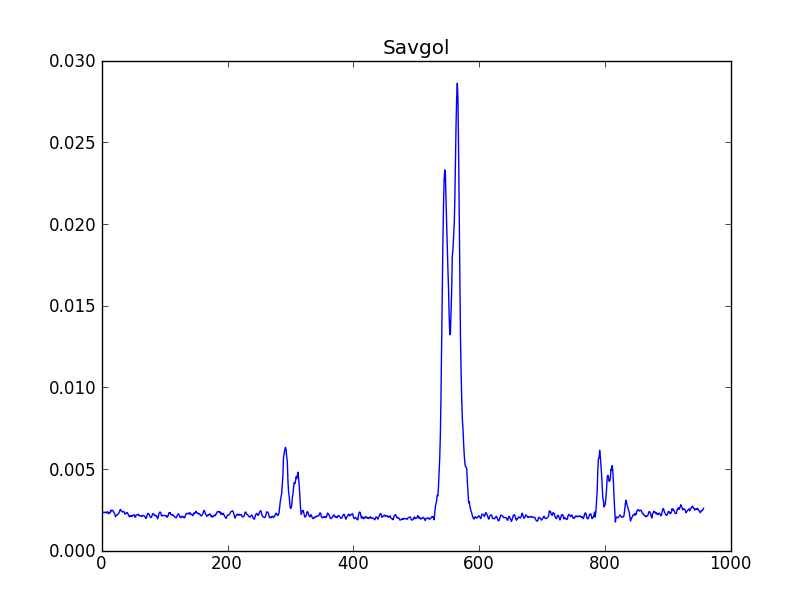
Savitzgy-Golay smoothed spectrum |
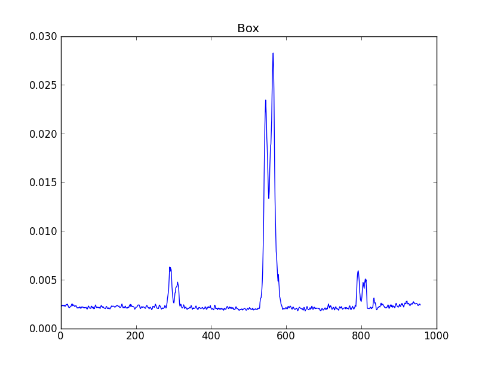
Boxcar smoothed spectrum |
| 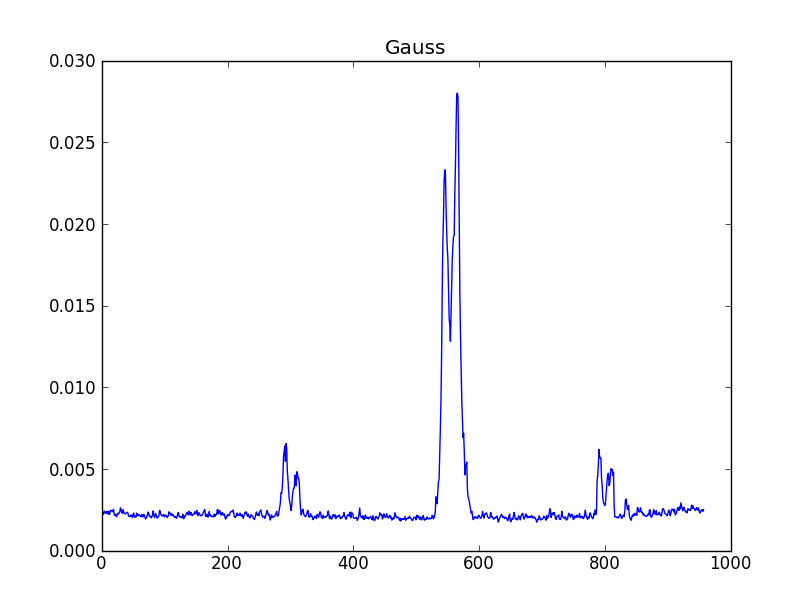
Gaussian smoothed spectrum |

Hanning smoothed spectrum |
| 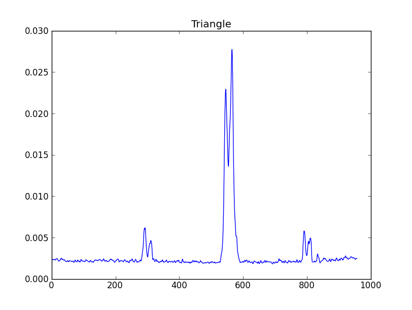
Triangle smoothed spectrum |
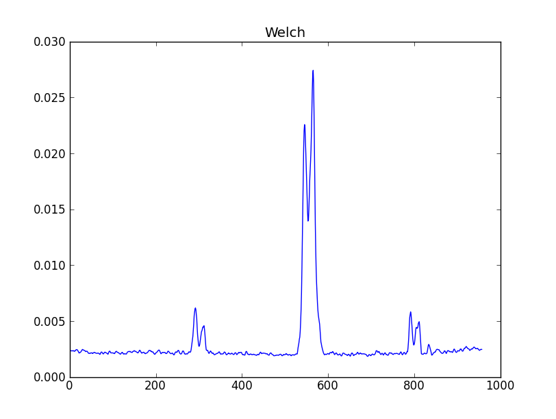
Welch smoothed spectrum |
{kind=link}
{kind=link}
{kind=link}
{kind=link}
{kind=link}
- Additional filters can be added to the class using the following method:
- add the method to the class, the method can assume that the raw spectrum will be in self.spec as a numpy array, and should return a numpy array of the same length with the filtered spectrum
- add the method name to the self.methods list
- add a self.<method_name>_args dictionary that contains the arguments and their default values
Continuum Subtraction¶
Proper continuum subtraction is necessary to get reliable fits to the peak intensity and width of the spectral lines. It must be performed on the CubeStats based spectrum, but is optional on CubeSpectrum based spectra, although the algorithms should be robust enough to do no harm if applied to spectra that have no continuum. The basic algorithm is to search for emission/absorption features, mask them out and fit the remaining data with a line/curve. There are currently two continuum subtraction algorithms.
SplineFit
The SplineFit algorithm fits a spline to the input masked spectrum. The order of the spline can be given as an argument or the algorithm can search for the best fit order based on a chi-squared analysis. The arguments are
| Parameter | Def. | Description |
|---|---|---|
| search | False | Whether or not to search for the best fit. |
| bbox | None | 2-sequence specifying the boundary of the approximation interval. If None (default), bbox=[x[0], x[-1]] |
| k | 3 | 1 < k <= 5, the degree of spline smoothing to use. |
| s | None | Positive smoothing factor used to choose the number of knots.
If None (default), s = len(w), where 1/w[i] is an estimate of
the standard deviation of y[i]. |
| ext | 0 | Controls the extrapolation mode for elements not in the interval defined by the knot sequence. |
| check_finite | False | Whether to check that the input arrays contain only finite numbers. |
PolyFit
The PolyFit algorithm fits a polynomial to the input masked spectrum. The order of the polynomial can be controlled as an input parameter, or the algorithm can search for the best fit order based on a chi-squared analysis. The arguments are
| Parameter | Def. | Description |
|---|---|---|
| search | False | Whether or not to search for the best fit. |
| deg | 1 | The degree of polynomial to use. |
Segment Detection¶
Segement detection is the most basic part of line identification. It identifies sections of channels that are above a specified cutoff level, these sections must also have more than a given number of contiguous channels in order to be counted. Currently we have two different methods of segment detection: one from the ASAP package, and one from ASTUTE. It is likely that we will only need one algorithm for segment detection, so both need to be thoroughly tested for robustness in the following circumstances:
- emission and absorption features
- weak signal in high noise
- strong signal with low noise
The output of the segment detection is a list of pairs of channels, with each pair indicating the beginning and ending channels of a segment.
Peak Detection¶
Peak detection will happen in several stages. If both a CubeStats and CubeSpec BDPs are supplied to the LineID_AT then peak detection would happen on the CubeStats first, as this is the most likely one to show any type of global pattern(s). Any patterns found would then be applied to any spectra from the CubeSpec_BDP.
There are currently two different peak finding algorithms in ADMIT: PeakUtils, and FindPeaksCWT. All peak finding algorithms are located in admit.util.peakfind, and are expected to return a list of peak positions from the input spectrum. Since peak finders are notably more complex than filters each algorithm is in its own class and file. The user will be able to select which one(s) to use. If multiple algorithms are specified then the results can be unioned or intersected, depending on the specified preference. Any method used must be robust to both peaks (positive) and troughs (negative). Any peak finding algorithm will return a list of peak positions. Once a list of peaks is generated it will be compared to the detected segments and any peaks not inside of a segment will be discarded as false/noise peaks.
PeakFinder
The PeakFinder algorithm searches for spectral peaks by taking the first derivative of the spectrum and looks for zero crossings. Noise spikes are eliminated by a noise cutoff, minimum separation of points, and minimum width of lines.
| Parameter | Def. | Description |
|---|---|---|
| spec | The input spectrum as a numpy array | |
| x | The x co-ordinates of the spectrum | |
| thres | The threshold to use for detecting a peak, currently this is [0.,1.] of the peak intensity, but should be converted to either a sigma or absolute flux value. | |
| min_sep | 5 | Minimum distance (in channels) between peaks. |
| min_width | 5 | Minimum distance (in channels) between peaks. |
PeakUtils
The PeakUtils algorithm has a two pass algorithm for detecting peaks. The first pass calculates the differential of each point, along with minimum amplitude and spacing inputs, to locate the peaks. The second pass takes the output of the first pass and refines the peak locations by fitting either a Gaussian or Lorentzian profile to the data. This algorithm also has the ability to remove a baseline from the spectrum for a better fit, which is useful since the peak/rms CubeStats spectra will have an artificial “continuum”. Input parameters:
| Parameter | Def. | Description |
|---|---|---|
| spec | The input spectrum as a numpy array | |
| x | The x co-ordinates of the spectrum | |
| thres | The threshold to use for detecting a peak, currently this is [0.,1.] of the peak intensity, but should be converted to either a sigma or absolute flux value. | |
| min_dist | 5 | Minimum distance (in channels) between peaks. |
| profile | “gaussian” | Which profile to use for refining the peak locations. Choices are “gaussian” and “lorentzian”. |
| width | 10 | the number of channels on either side of a peak to use when refining a peak location. |
| basedeg | 3 | The order of the polynomial to use for baseline subtraction. |
| baseiter | 100 | The maximum number of iterations to perform when trying to fit the baseline. |
| basetol | 1e-3 | Tolerance to use when iterating to find the best baseline fit. |
| dobase | False | Whether or not to do baseline subtraction, should be set to True when processing CubeStat data as it has a “continuum”. |
FindPeaksCWT
The FindPeaksCWT is a wrapper for the SciPy Continuous Wavelet Transform peak finder.
Input parameters:
| Parameter | Def. | Description |
|---|---|---|
| spec | The input spectrum as a numpy array | |
| x | The x co-ordinates of the spectrum | |
| widths | A 1D array of widths to use to calculate the CWT matrix. | |
| wavelet | None | Which wavelet to use (default is actually the ricker wavelet) |
| max_distances | widths/4. | Range of distances to use for finding individual and ridges of peaks. |
| gap_thresh | How far relative peaks can be before a ridgeline is stopped. | |
| min_length | 1/4 #widths | Minimum length a ridgeline needs to be. |
| min_snr | 3 | Minimum SNR. |
| noise_perc | 10 | Percentage of data points below which is considered noise. |
Additional peak finding algorithms can be added in admit/util/peakfind by following these guidelines
- A class whose signature __init__ is as sketched below. This allows for a constant calling signature and aids in the plug and play nature of the peak finder
- The class must define a “find” method that takes no arguments and which returns a list of peaks
- Any additional methods are up to the developer
- Add a self.<class_name>_args dictionary that contains the arguments and their default values to LineID_AT
- Add the class name to the LineID.methods list
def __init__(self,spec,x = None,**kwarg):
Pattern Matching¶
Once peak finding is complete LineID will look for patterns in the located peaks. Patterns are defined as spectral features that are caused by the kinematics of the source (e.g. rotation, collapse, expansion, etc). As an example take the following spectrum where peak finding located 5 distinct peaks.
{kind=link}
Example spectrum showing 5 peaks detected.
LineID will calculate the distances between all pairs of peaks: 1->2, 1->3, 1->4, 1->5, 2->3, 2->4, ... From these results the AT will look for distinct pairs of lines that are the same distance apart, within a small margin of error. In this instance the pairs 2->3 and 4->5 would meet the criteria. The AT would then determine that there is a pattern to at least some of the spectral features (this would require at least two distinct pairs of lines to determine). Once this determination is made the AT will assume that the center between the peaks is the correct line frequency (labeled “c” on the below plot).
{kind=link}
For these pairs of lines only the central frequency (“c”) will be considered for trying to identify the line. The velocity offsets of the two peaks will be retained for subsequent spectra. For any subsequent spectra (e.g. from CubeSpec), or any lines not part of the pattern (line 1 in this case) LineID would consider any of the three velocities (systemic, lower offset, and upper offset) to be possible frequencies for the purpose of identifying the line, as some spectral lines may only appear in one of the velocity components. Any peak finding and pattern matching algorithms will have to be robust to both standard rotation profiles, P-Cygni, inverse P-Cygni, and pairs of absorption lines.
Note that pattern finding can become problematic if there are too many lines in a given spectrum. In these instances false patterns can be detected. A threshold was determined through thorough experimantation above which pattern finding will have too great a chance of finding false patterns. The experiments involved creating noise spectra with differing numbers of channels (500 - 20,000), injecting Gaussian line profiles (between 5 and 100) randomly into the spectra, and running the segment finder, peak finder, and parrern finder on them. Then the number of patterns found in each spectra was determined, since all peaks were random there should be 0. This was run 100 times for each spectrum size. It was decided to make a cutoff when the pattern finder found a false pattern no more than 25% of the time. The figure below shows this point for each of the spectral sizes. The x axis is the number of channels in the spectrum and the y axis is the number of peaks which form a false pattern 25% of the time. The red curve is from experimentation and the black curve is the best fit. If the number of peaks in a given spectrum falls above the curve (hatched area) then the pattern finder will turn itself off, unless it is forced on.
{kind=link}
Plot of the number of peaks vs the number of channels in a spectrum. The red curve represents the point above which palse patterns are detected at least 25% of the time. The black curve is the best fit to these points.
Using a type of cross-correlation to do pattern matching was considered. Testing showed that the shape of the result was very dependent on the number of features in the spectrum and was more complex than the original spectrum. The result when a double peaked spectrum was cross-correlated was very similar to when a spectrum with a mix of double and single peaked features was used.
2-Dimensional Line Detection¶
All discussion on 2D line detection have been postponed until the PVCorr_AT is complete.
Filtering¶
In order to reduce the noise and enhance any lines a 2D filter can be applied to the PvSlice. ADMIT offers several different 2-Dimensional filters that can be applied, these are located in admit/util/filter/Filter2D.py. The currently available filters are: Gaussian, Welch, Hanning, Triangle, Boxcar, and Savitzgy-Golay. Since filters are generally simple to implement they are all encased in a single class: Filter2D. The class signature takes the spectrum, which method to use, and the arguments for each filter.
Details of the different filter keywords and defaults:
| Filter | Keyword | Def. | Description |
|---|---|---|---|
| “boxcar” | “width” | 5 | Number of channels to average together |
| “gaussian” | “width” | 9 | Number of channels to span with the Gaussian |
| “hanning” | “width” | 7 | Number of channels to include in the cos |
| “triangle” | “width” | 7 | Number of channels to span with the triangle |
| “welch” | “width” | 7 | Number of channels to use in the function |
| “savgol” | “window_size” | 11 | Number of channels to use in the calculation |
| “order” | 3 | Order of the polynomial fit (must be odd) | |
| “deriv” | None | The number of the derivative to compute (None = just smooth) |
{kind=link}
The raw image
| 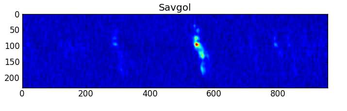
Savitzgy-Golay smoothed image |
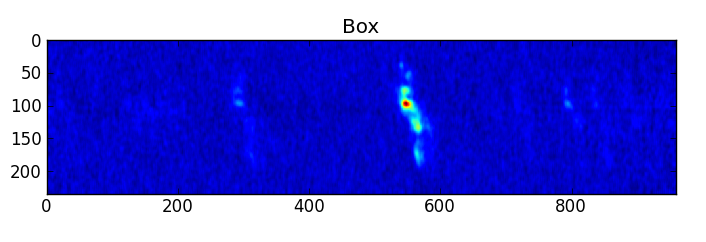
Boxcar smoothed image |
| 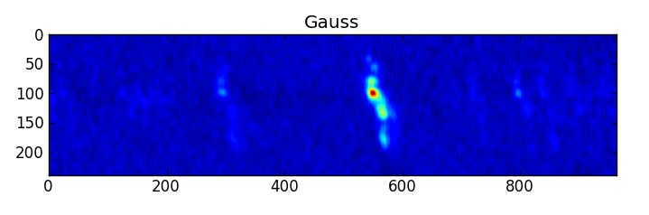
Gaussian smoothed image |
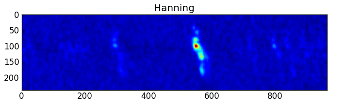
Hanning smoothed image |
| 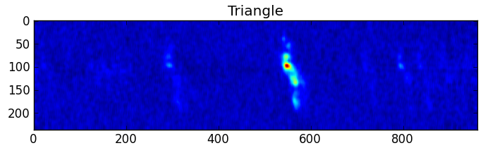
Triangle smoothed image |
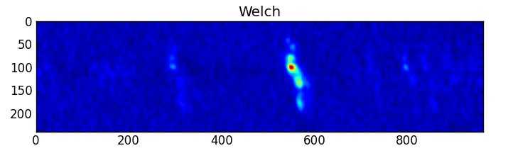
Welch smoothed image |
{kind=link}
{kind=link}
{kind=link}
{kind=link}
{kind=link}
{kind=link}
- Additional filters can be added to the class using the following method:
- add the method to the class, the method can assume that the raw image will be in self.data as a numpy array, and should return a numpy array of the same dimensions with the filtered image
- add the method name to the self.methods list
- add a self.<method_name>_args dictionary that contains the arguments and their default values
Peak Detection¶
There are several 2 Dimensional peak finding algorithms already in python and they are still being investigated
Pattern Matching¶
This is likely the purview of PVCorr: Pattern matching in the 2-D case is similar to the 1-D case in that the LineID_AT will be searching for similar patterns of emission/absorption. Once peaks are located in the map the emission regions, defined to be any contiguous region with emission above a given threshold, will be determined. A spline will be constructed that describes the ridge of peak emission (an “S” shape in the case of rotation). This spline will then be convolved across the map looking for strong correlations
{kind=link}
These strong correlations will indicate spectral lines. The central peak or the center between the strongest peak on the spline and any correlations will be considered the correct rest frequency for the line(s).
Line Identification¶
Line identification is a multi-stage process. Once peaks are located their locations are compared to the Tier 1 list of molecules. The Tier 1 list of molcules contains the transitions of molecules that if present, are expected to be a dominant emission peak in the spectrum. The allowed frequency/velocity ranges for these transitions are relaxed compared to those of others. In gneneral any peak detected within 30 km/s (galactic source) and 200 km/s (extragalactic source) of a Tier 1 rest frequency will be assigned the identification of that transition. Additionally, the identified peak is traced down to the cutoff level and any additional peaks found along the way are also labeled the Tier 1 transition. Tier 1 molecules are:
| Molecule | Constraints |
|---|---|
| CO | 31.0 - 950.0 GHz |
| 13CO | 31.0 - 950.0 GHz |
| C17O | 31.0 - 950.0 GHz |
| HCO+ | 31.0 - 950.0 GHz |
| HDO | 31.0 - 950.0 GHz |
| CCH | 31.0 - 950.0 GHz, HFL |
| CN | 31.0 - 950.0 GHz, HFL, weakest lines eliminated |
| HCN | 31.0 - 950.0 GHz, HFL |
| HNC | 31.0 - 950.0 GHz |
| 13CN | 31.0 - 950.0 GHz, HFL, weakest lines eliminated |
| H13CN | 31.0 - 950.0 GHz, HFL |
| HN13C | 31.0 - 950.0 GHz |
| N2H+ | 31.0 - 950.0 GHz, HFL |
| C18O” | 31.0 - 950.0 GHz |
| H13CO+ | 31.0 - 950.0 GHz |
| DCO+ | 31.0 - 950.0 GHz |
| H2CO | 31.0 - 950.0 GHz, weakest lines eliminated, limited to Eu < 200 K |
| DCN | 31.0 - 950.0 GHz, HFL |
| CS | 31.0 - 950.0 GHz |
| SiO | 31.0 - 950.0 GHz |
| SO | 31.0 - 950.0 GHz, weakest lines eliminated |
| HC3N | 31.0 - 950.0 GHz, HFL, weakest lines eliminated |
| 13CS | 31.0 - 950.0 GHz |
| C34S | 31.0 - 950.0 GHz |
HFL indicates hyperfine lines, these transitions are treated specially in that only the strongest hyperfine line is searched for initially. If that line is found then the rest of the hyperfine components are searched for.
Once any Tier 1 lines have been identified, the frequency of the remaining peaks are used to search for possible identifications with the slsearch tool. The frequency range is determined by fiting a Gaussian to the peak and getting the FWHM of the line. This value is used for the frequency range given to slsearch.
From the list of potential identifications from slsearch, the best identifiation is determined by comparing the upper state energies of the transitions, the number of non-standard isotopes in the molecules (13C would be considered non-standard, while 12C would be considered standard), and the molecular weights. The “winner” is usually the one with the lowest energy, unless it has a high mass compared to other possible molecules, or has a large number of non-standard isotopes. This precess will likely be refined as we move forward. If no potential identifications are returned by slsearch then the line is marked as Unidentified.
Tier 1 Database¶
The Tier 1 lines are stored in an SqLite database that is queryable via the Tier1DB class. The data are in two tables, one for the transitions with no hyperfine components and strongest hyperfine components, and one for the weaker hyperfine components associated with the stronger ones. The columns of the Transitions table are as follows:
| Name | Type | Units | Description |
|---|---|---|---|
| SPECIES | STRING | None | The chemical formula. |
| NAME | STRING | None | The name of the molecule. |
| FREQUENCY | REAL | GHz | The transition frequency. |
| QUANTUM_NUMBERS | STRING | None | The quantum numbers of the transition. |
| LINE_STR | REAL | Debye^2 | The transition line strength. |
| LOWER_ENERGY | REAL | K | The lower state energy of the transition. |
| UPPER_ENERGY | REAL | K | The upper state energy of the transition. |
| HFS | INT | None | The key for locating any related hyperfine lines in the HFC table. |
The columns of the HFC table are as follows:
| Name | Type | Units | Description |
|---|---|---|---|
| TRANSITION | INT | None | Key linking the hyperfine components of a single transition together. |
| FREQUENCY | REAL | GHz | Hyperfine component frequency. |
| QUANTUM_NUMBERS | STRING | None | Hyperfine transition quantum numbers. |
| LINE_STR | REAL | Debye^2 | Hyperfine transition line strength. |
| LOWER_ENERGY | REAL | K | Hyperfine transition lower state energy. |
| UPPER_ENERGY | REAL | K | Hyperfine transition upper state energy. |
from admit.util.Tier1DB import Tier1DB
t1db = Tier1DB()
The database can be querried either with the searchtransitions method or, for the expert user, the query method. The searchtransitions method takes numerous parameters to constrain the frequency range, energy range, line strength, and species name. See the Tier1DB — Tier 1 molecular line database services. API for details on the parameters. The query method takes a single string, containing an SQL query, as a parameter.
t1db.searchtransitions(freq=[100.0,102.0]) # searches between 100.0 and 102.0 GHz
The results of the query are stored internally in the class and can be returned with the get, getone, or getall methods. The getone and getall methods return a single result (the next one in the list) or all results, respectively. The get method takes a single parameter, an integer specifying how many results to return. The return values are a list (or a list of lists in the case of get (n>1) or getall). Each element in the list are an entry from the database columns. In the case of the query method, the number and type of columns are dependednt on the specifics of the query string. For the searchtransitions method the returned list will have seven entries, one for each of the columns in the above Transitions table.
results = t1db.getall()
The results can be iterated over:
for r in results:
print r
If any transition has associated hyperfine components the value of the HFS column (column 8 from the searchtransitions method) will be non-zero, the actual value indicating the index for the HFC table. The hyperfine components can be retrieved with the searchhfc method, which takes a single parameter, the HFS key.
for r in results:
if r[7] > 0:
t1db.searchhfc(r[7])
hfc = t1db.getall()
The results returned are a list of lists, each inner list containing an entry from columns 2-6 of the above HFC table. Note that the class only holds the results from the most recent query, so it is recommended that the results of a query are fully retrieved before initiating another query.
Identification Confidence¶
Each identified line will have an associated confidence level that indicates how sure the system is of the identificaiton. The confidence level will be specified as a percentage, with 100% being full confidence and 0% being no confidence, though no line will have either 100% confidence or 0% confidence. Every identification will start at 50% and will have a range of 5%-95%. The following table describes any modifiers.
| Description | Mod. |
|---|---|
| It is a tier 1 line | +40% |
| Segment overlaps another line | -20% |
| Segment overlaps a tier 1 line | -40% |
| Hyperfine components/torsional components also ID’d* | +20% |
| Missing hyperfine components/torsional components* | -20% |
| Identified in multiple inputs (spec, stats, pvcorr) | +15% ea. |
*additional code not in the AT will be needed to determine this.
Unidentified lines will not have a confidence level.
The Summary¶
Each ADMIT object contains a summary of the data, ATs, and BDPs that it contains, stored in a Summary — Project summary metadata. Summary object. The Summary defines and manages the summary metadata for the ADMIT object, which is ingested by ALMA Archive and also used by data browser.